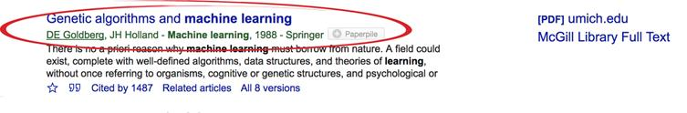

Международные базы научных статей можно классифицировать на две большие группы: реферативные базы данных научного цитирования и полнотекстовые базы данных.
Реферативные базы данных представляют собой платформы, позволяющие осуществлять поиск библиографических данных (абстракт, название, авторы, число цитирований, др. выходные данные) (например, библиографию: журнальных статей, глав книг, книг, монографий, патентов и т.д.) по различным областям науки. Поиск материалов можно осуществить по теме, авторам, цитируемости, а также получить ссылки на сайты/издательства, где расположены полнотекстовые публикации.
Полнотекстовые базы данных, с другой стороны, представляют собой платформы, позволяющие получить полный доступ к публикации, например, статья в журнале, монография или глава учебника. В большинстве своем это крупные функциональные платформы издательств, публикующих журналы/учебники/конференции и т.д.
Целью расширенной версии данного исследования является проведение сравнительного анализа баз данных/платформ из каждой подгруппы. В частности, автор проанализирует охват, основные направления деятельности, предлагаемые аналитические инструменты (например, анализ цитирования, профили авторов) платформ.
Следующие базы данных будут проанализированы:
- реферативные базы данных: Scopus, Web of Science, Google Scholar (Академия Google);
- полнотекстовые базы данных: PubMed, EEE Xplore, ScienceDirect, Springer Link.
Ниже приведена краткая информация по базам.
Scopus – реферативная база данных научной литературы, созданная издательством Elsevier. Доступ представляется по институциональной подписке. Поиск осуществляется, по ключевым словам, названию статьи или журнала. Полученные результаты можно отфильтровать по году опубликования, тематике, типу документа, аффилиации. Представляет инструменты анализа и визуализации данных, отслеживания.
Web of Science – реферативная база данных научной литературы. Доступ представляется по институциональной подписке. Система основана на индексе цитирования (определяется на основе количества цитирований) научных работ. Поиск осуществляется, по ключевым словам, названию статьи или журнала. Полученные результаты можно отфильтровать по году опубликования, тематике, ключевым словам, типу документа, аффилиации. Представляет инструменты анализа и визуализации данных, отслеживания.
Web of Science - платформа для анализа цитирования и поиска научных статей.
Преимущества: Анализ цитирования для оценки влияния статей.
Интегрированные инструменты для анализа трендов и исследований.
Google Scholar – бесплатная поисковая система по научным публикациям. Система индексирует метаданные публикаций и осуществляет поиск платформы/веб сайта, где расположен полный текст научной публикации (в том числе, статьи журналов, книги, диссертации, отчеты, перпринты). Поиск можно осуществить по авторам, ключевым словам, наименованию журнала или учебника. Система также позволяет ранжировать материалы по публикации, предметной области, дате.
Google Scholar предоставляет широкий поиск по научным статьям, включая открытый доступ и платные ресурсы.
Преимущества: Бесплатный доступ.
Интеграция с другими сервисами Google.
Scopus - мультидисциплинарная база данных, охватывающая науку, технику, медицину, социальные науки и искусство.
Преимущества: Обширный охват различных научных областей. Интегрированные аналитические инструменты.
Недостатки: Платная подписка для полного доступа.
ScienceDirect – сайт/платформа, которая представляет платный доступ к научным публикациям. Принадлежит крупнейшему в мире коммерческому издательству научной литературы Elsevier. Содержит научные журналы (около 2500) и электронные книги (около 26000). Охватывает такие науки как: естественные, физические и инженерные, общественные и гуманитарные, медицина. В бесплатном доступе представляет библиографические данные (например, название публикации, абстракт, выходные данные журнала). Полный доступ осуществляется по подписке.
ScienceDirect - база данных электронных версий научных журналов и сборников статей издательства Elsevier.
Преимущества: Широкий охват научных областей. Интеграция с другими сервисами Elsevier.
Недостатки: Платная подписка для полного доступа.
Springer Link – международная издательская компания, которая специализируется на издании академических публикаций (журналов и учебников) по естественно-научным направлениям включая экономику, медицину, архитектуру, инженерное дело, транспорт и строительство, теоретическая наука. Компания охватывает около 70 издательских домов со всего мира и издает более 1450 журналов и 5000 книг ежегодно. Издательство является вторым по величине издательством в мире после Elsevier в направлениях медицина, наука и технологии.
PubMed – бесплатная поисковая система по биомедицинским исследованиям, созданная в США. PubMed предоставляет доступ к нескольким базам, которая включает научные результаты по химическим, естественным и поведенческим наукам, включая биоинженерию и биофизику. Портал является показательным и повлиял на развитие естественных наук за счет предоставления бесплатного доступа к поиску информации и распространения открытой науки и доказательной медицины.
PubMed – крупнейшая медицинская база данных, включающая статьи по медицине, биологии и связанным областям.
Преимущества: Фокус на медицинских и биологических научных исследованиях. Широкий охват медицинской литературы.
Недостатки: Ограниченный охват других областей науки.
EEE Xplore – платная поисковая платформа, обеспечивающая доступ к научной литературе по электронике, компьютерной инженерии, компьютерным и смежным наукам. В бесплатном доступе находятся библиографические данные включая абстракты. Оценочный охват включает: около 300 журналов, около 2000 конференций и более 11000 технических стандартов, также более 5000 электронных книг.
IEEE Xplore - база данных по электротехнике, компьютерным наукам и связанным областям.
Преимущества: Специализированная на технических и инженерных исследованиях. Высокое качество статей.
Недостатки: Ограниченный охват гуманитарных и общественных наук.
Springer Link - Научная Платформа для Публикаций. Springer Link является важной научной платформой, предоставляющей широкий спектр ученых ресурсов, включая журналы, книги и материалы конференций. Охватывая различные области, такие как наука, технологии, медицина и социальные науки, Springer Link предоставляет обширный архив рецензируемого контента. Исследователи и профессионалы могут воспользоваться удобным интерфейсом, эффективными средствами поиска и доступом к актуальной информации, способствуя прогрессу в различных областях науки.
Каждая из перечисленных баз данных и аналитических инструментов имеет свои преимущества и недостатки, и выбор зависит от конкретных потребностей исследователя [1-3].
Таблица 3.3.1. Аналитические инструменты
|
Инструмент |
Описание |
Области покрытия |
Преимущества |
Ограничения |
|
1. IEEE Xplore |
Электротехника и компьютерные науки |
Электротехника, компьютерные науки |
Комплексное покрытие областей электротехники, отличные стандарты |
Основная направленность на технические дисциплины |
|
2. Science Direct |
Мультидисциплинарная |
Наука, технологии, медицина, социальные науки |
Широкий спектр дисциплин, высококачественные журналы |
Отсутствие некоторых специализированных областей |
|
3. Springer Link |
Мультидисциплинарная |
Наука, технологии, медицина, социальные науки |
Обширный архив рецензируемого контента |
Некоторые публикации могут требовать платного доступа |
|
4. PubMed |
Медицинская наука |
Медицина, биология |
Специализированная в области медицины, свободный доступ |
Ограниченное покрытие других научных областей |
|
5. Scopus |
Мультидисциплинарная |
Все научные области |
Широкий охват, аналитические инструменты, цитирование |
Платная подписка для полного доступа |
Общие замечания:
Каждая база данных имеет свои особенности и преимущества в зависимости от области исследования.
Некоторые базы данных, такие как IEEE Xplore и PubMed, специализированы в определенных областях, в то время как другие, например, Scopus и ScienceDirect, охватывают множество дисциплин.
Платформы предоставляют различные инструменты для анализа исследований, включая анализ цитирования и статистику публикаций.
Некоторые базы данных могут требовать платного доступа для полноценного использования своих ресурс.
Одним из основных показателей, характеризующим результативность
научной деятельности, является публикационная активность исследователей в отечественных и зарубежных научных изданиях.
Лидерами публикационной активности на протяжении последнего десятилетия стабильно являются США, Китай и Великобритания.
Стоит отметить, что Китай в этом вопросе добился существенного роста. С 1996 года, занимая 9 позицию в рейтинге стран по количеству публикаций SCImago Journal and Country Rank, страна ежегодно наращивала этот показатель.
К 2004 году Китай догнал Великобританию, а в 2005 обогнал ее и укрепил позицию.
Перечень тройки лидеров с 2005 года остается неизменным.
Среди стран СНГ и постсоветского пространства лидером по количеству публикаций является Россия, занимая 13 место в мире.
Также это единственная страна указанного региона, которая входит в топ-20 стран по данному показателю. Казахстан в этом рейтинге занимает 76 место из 239, отставая от России в 6 раз, однако занимая прочные лидирующие позиции в Центрально-азиатском регионе (рисунок 3.3.1).
Рисунок 3.3.1. Количество публикаций в 2014-2018 гг, тыс.
Основная специализация публикаций из Казахстана – математика, наука о космосе, физические и химические науки. По техническим и прикладным наукам средний темп прироста публикаций с 2015 по 2018 годы составляет около 1%. Среди областей исследований, демонстрирующих наибольшую продуктивность по количеству публикаций, можно отметить физику, математику, науку о космосе и химию. Наименьшее число публикаций приходится на социальные науки (рисунок 3.3.2).
Рисунок 3.3.2. Доля публикаций Казахстана относительно среднего значения по миру
В мировом потоке наибольшая публикационная активность характерна для медицины, технических и прикладных наук с долями в среднем 34,3 и 29,3 соответственно. Работы в области физических наук составляют в среднем 21,4% общего количества публикаций в мире. Удельный вес публикаций Казахстана по науке о жизни, социальным наукам, искусству и гуманитарным наукам соизмерим с мировыми значениями в аналогичных сферах. Доля публикаций казахстанских авторов в мировом потоке составляет лишь 0,086%. Уровень цитирования научных трудов казахстанских авторов остается довольно низким с отставанием от США в 977 раз, от России в 38 раз по абсолютному показателю (рисунки 3.3.3 и 3.3.4).
Рисунок 3.3.3. Количество цитирований в 2014-2017 гг. тыс.
Рисунок 3.3.4. Сопоставление показателей CNCI (нормализованной средней цитируемости) публикаций Казахстана и других стран Центрально-Азиатского региона
Рисунок 3.3.5. Доля публикаций Казахстана за 1996-2022 по миру
С целью оценки вклада Казахстана в мировую научную среду проведен анализ доли публикаций за период с 1996 по 2022 год. Исследование направлено на выявление тенденций и динамики участия казахстанских ученых в мировых научных публикациях (Рисунок 3.3.5).
Методология
Сбор данных: Использованы базы данных научных публикаций, такие как PubMed, Scopus, Web of Science и другие, для охвата различных областей знаний.
Фильтрация: Выборка ограничена публикациями, авторами которых являются представители Казахстана или организации в Казахстане.
Анализ доли: Рассчитана доля публикаций из Казахстана относительно общего числа мировых публикаций за каждый год.
Результаты
В начале исследуемого периода, с 1996 по начало 2000-х, доля казахстанских публикаций в мировых исследованиях была, возможно, невелика из-за ограниченного доступа к мировым журналам.
В последующие годы, с расширением доступа к информации и развитием казахстанской науки, можно ожидать увеличение доли публикаций.
Инфраструктурные изменения: Развитие университетов, научных центров и инфраструктуры исследований в стране могут оказывать положительное воздействие на участие в мировых публикациях.
Международные партнерства: Сотрудничество с зарубежными учеными и институтами может стать дополнительным стимулом для увеличения доли казахстанских публикаций.
Анализ доли публикаций Казахстана в мировых исследованиях за период 1996-2022 гг. предоставляет инсайты в динамику развития казахстанской научной среды. Увеличение этой доли может свидетельствовать о росте научной активности и влиянии страны в мировом научном сообществе. Дополнительные исследования могут быть направлены на более детальное изучение факторов, влияющих на эту динамику.
Рисунок 3.3.6. Список Казахстанских журналов в базе Scopus
Рисунок 3.3.7. Цитирование журналов за 1996-2023 годы в мировом базе
Цитирование журналов за указанный период играет важную роль в понимании развития научных исследований и их влияния на области знаний. Это позволяет ученым отслеживать развитие тем и тенденций в своей области, а также оценивать вклад авторов в научное сообщество.
Мировые базы данных цитирования, такие как Web of Science, Scopus и Google Scholar, предоставляют доступ к множеству журналов, позволяя исследователям анализировать цитирования статей, определять их влияние и оценивать их академическую значимость.
Оценка цитируемости журналов за указанный период имеет важное значение для:
Оценки влияния исследований: Путем анализа цитирований ученые могут оценить, насколько определенная статья или журнал влияют на другие исследования в этой области.
Определения качества исследования: Чем больше цитирований имеет статья или журнал, тем более важным и влиятельным считается их вклад в область знаний.
Принятия решений о публикациях: Исследователи могут использовать данные о цитированиях для выбора журналов, в которых опубликовать свои работы, и для оценки их возможного влияния.
Существует очень много баз данных, есть казахстанские, российские и международные, с платным и бесплатным доступом, узкоспециализированные и мультидисциплинарные. У одних более лояльные требования, у других более строгие. При выборе конкретного издания нужно руководствоваться направлением исследований и популярностью индексируемого журнала. Ведь чем более востребованный журнал, в котором публикуется автор, тем больше шансов, что его статью прочитают и будут ссылаться на нее в дальнейшем.
Далее мы приведем детальный анализ представленных баз данных и сравним базы между собой.
Библиометрические и наукометрические методы имеют многочисленные и разнообразные области применения: от информатики, социологии и истории науки до оценки исследований и научной политики. Крупномасштабные библиометрические исследования стали возможными благодаря созданию и развитию Индекса научного цитирования (SCI) в 1963 году, который сейчас является частью Web of Science (WoS) наряду с двумя другими индексами: Индексом цитирования по социальным наукам (SSCI) и Индексом искусств. и Индекс цитирования по гуманитарным наукам (A&HCI). Важной особенностью этих баз данных является то, что они включают все типы статей и индексируют всех авторов, адреса учреждений и библиографические ссылки для каждой статьи. WoS был единственным инструментом для анализа цитирования до создания Scopus и Google Scholar в 2004 году. Однако низкое качество данных, обнаруженное в Google Scholar, вызывает вопросы о его пригодности для оценки исследований. Таким образом, WoS и Scopus остаются сегодня основными источниками данных о цитировании. Более того, междисциплинарный охват этих баз данных представляет собой значительную силу для изучения и сравнения различных научных областей.
Как для библиометрических исследований, так и для библиометрической практики важно понимать сильные и слабые стороны различных источников библиографических данных. Поскольку большинство исследователей не имеют возможности извлекать большие объемы данных из таких источников данных, как Scopus и WoS, источники библиографических данных обычно сравниваются в небольших тематических исследованиях, сосредотачиваясь, например, на документах в конкретной области исследований или на небольших исследованиях. количество исследователей и документы, которые они написали.
Целью данного исследования является проведение сравнительного анализа по 7-ми международным базам данных научных статей (научных журналов), и аналитических инструментов по их использованию. В частности, в рамках нашего анализа мы проведем анализ библиографических и полнотекстовых баз, в т.ч.: Scopus, Web of Science (WoS), Google Scholar (GS), PubMed, IEEE Xplore. В дополнение к библиографическим базам данным, авторы включили проведение обзора полнотекстовых баз данных Science Direct и SpringerLink для отражения различий в содержании информации базами. Приведенные базы данных одни из крупных по своему охвату и некоторые в своей области. Например, Scopus и WoS одни из крупных в мире библиографических баз данных, PubMed крупнейший в мире для биотехнологий и медицинских наук, и IEEE Xplore – для инженерии. Science Direct и SpringerLink одни из крупных полнотекстовых платформ, которые вместе покрывают около 55% контента научной литературы. Наше внимание сосредоточено на понимании функционала и различий между базами данных.
В качестве задач исследования определено следующее:
- провести обзор международных баз данных научных статей (научных журналов), и аналитических инструментов;
- провести сравнительный анализ приведенных баз включая: сфера охвата, пользовательский интерфейс, варианты доступа, аналитические инструменты, алгоритмы поиска, наличие фильтров, интеграция с другими инструментами.
Актуальность исследования.
Процесс управления знаниями является результатом необходимости выжить в мире, где доминируют инновации, а необходимость управления ими основана на создании стоимости. Знание — это процесс, который происходит в три этапа: создание, использование и поддержание. Эти шаги приводят к созданию новых знаний, которые, в свою очередь, подпитываются отношениями, возникающими между дисциплинами. Этими знаниями необходимо делиться, и организации должны найти способ сделать это, чтобы выжить. Таким образом, базы данных могут быть решением, способствующим созданию ценности и научному производству.
В этом исследовании был сделан обзор современного состояния, поскольку этот метод оценки позволяет глубже изучить предмет и ответить на вопросы для целей данного исследования. Вопрос, на который предстоит ответить, заключается в следующем: каково значение баз данных в научном производстве? Сбор статей по таким темам, как управление знаниями, базы данных и т. д., был отправной точкой для принятия решения по поставленному вопросу.
Исследование основано на систематическом и сравнительном анализе, которое включает также методы классификации, обобщения и сравнения.
3.3.1 Обзор международных баз данных научных статей (научных журналов) и аналитических инструментов
База данных 1: Scopus
Предоставьте обзор выбранной базы данных (например, Scopus). Подробно опишите его охват, историю и основные направления деятельности. Обсудите типы аналитических инструментов, которые он предлагает (например, анализ цитирования, профили авторов).
Scopus – одна из крупнейших баз данных рефератов и цитирования независимая от источника. Scopus уникальным образом сочетает в себе обширную, тщательно подобранную базу данных рефератов и цитат с расширенными данными и связанной научной литературой по широкому спектру дисциплин [1].
Scopus быстро находит актуальные и авторитетные исследования, идентифицирует экспертов и предоставляет доступ к надежным данным, показателям и аналитическим инструментам. Scopus представляет информацию о развитии исследований, преподавания или исследовательских направлений и приоритетов.
Современные инструменты поиска и фильтры Scopus помогают находить соответствующую информацию, отслеживать тенденции исследований, отслеживать новые опубликованные исследования и выявлять профильных экспертов. Кроме того, аналитические инструменты Scopus упрощают визуализацию, сравнение и экспорт данных.
Комплексный охват контента
Scopus индексирует контент более чем 25 000 активных изданий и 7 000 издателей — все они тщательно проверяется и отбирается независимой экспертной комиссией. Пользователи получают доступ к тысячам названий, более 91 миллиона записей, более 94 000 профилей партнеров и более 17 миллионов авторов [2].
Историческая глубина: почему важны цитаты
Поскольку в Scopus цитируется более 1,7 млрд ссылок, каждая индексируемая публикация имеет в среднем на 10-15% больше цитирований, чем ближайший конкурент [2]. Больше цитируемых ссылок означает, что при запросе получается:
более обширный анализ библиометрических и исторических тенденций;
более полные профили авторов;
улучшены показатели индекса Хирша для авторов.
Авторы, зарегистрированные в Scopus лучше представляют свою научную деятельность и повышают свою известность.
Scopus представляет экспертно-подобранный контент гарантируя только самые проверенные и рецензируемые научные статьи, книги и материалы конференций.
Отбор контента и консультативный совет
Scopus охватывает около 240 дисциплин [2]. Контент тщательно проверяется и отбирается независимым консультативным советом по отбору контента (CSAB), в который входят международная группа ученых и исследователей, имеющих опыт редактирования журналов.
Круглый год члены CSAB несут ответственность за рассмотрение всех новых изданий, предлагаемых для индексации в Scopus. Они также проверяют и обеспечивают сохранение качества существующего контента.
Ежегодно тысячи новых изданий предлагаются для включения в Scopus, но только 33% из них соответствуют строгим критериям отбора [2]. Из примерно 1200 наименований только 50% принимаются после проверки независимым консультативным советом по выбору контента [2].
Scopus обеспечивает прозрачный процесс отбора при независимой наблюдательной комиссии. Международные эксперты CSAB постоянно рассматривают новые запросы на право собственности, используя как количественные, так и качественные показатели. В CSAB для включения в Scopus могут быть предложены только периодические издания, включая журналы, серии книг и серии конференций.
История компании
В 2002 году команда Elsevier в Амстердаме начала создавать базу данных научной литературы под названием Scopus [3]. К тому времени большинство университетов по всему миру подписались на другую крупную академическую базу данных – Web of Science (WoS), разработанную Thomson Reuters. Несмотря на заявленную междисциплинарность, большинство материалов, индексируемых WoS, относились к естественным, техническим и социальным наукам [1], [2]. Поэтому многие исследователи и библиотекари открыто заявляли о необходимости создания альтернативной поисковой системы с более широким охватом [2]. Название базе было дано в честь молотоголового птицы-пеликана или Scopus umbretta, известной своими навигационными навыками. Создатели увидели в этом аллегорию того, как база данных поможет исследователям находить информацию. В переводе с латыни Scopus означает “Цель” [2].
Создатели Scopus опирались на принципы дизайна, ориентированного на пользователя. Поэтому бета-версия базы данных была протестирована на фокус-группе. Финальная версия сайта была выпущена во второй половине 2004 года. На момент запуска коллекция Scopus насчитывала более 27 миллионов научных статей.
Основные направления деятельности
Scopus – крупнейшая единая база данных, которая аккумулирует различный научный контент и информацию о цитируемости рецензируемой научной литературы со встроенными инструментами отслеживания, анализа и визуализации данных.
Контент
Тип контента, включенный в Scopus, – это либо серийные публикации, имеющие ISSN (международный стандартный серийный номер), например журналы, серии книг и серии конференций, либо несерийные публикации, имеющие ISBN (международный стандартный серийный номер), например монографии или разовые материалы конференции.
Основная часть контента в Scopus – это рецензируемые журналы, которые отбираются в соответствии с политикой освещения контента. Любое серийное издание с ISSN, соответствующее техническим критериям, может быть предложено к рассмотрению и включено в Scopus. Более 5500 рецензируемых изданий имеют полный открытый доступ (по данным DOAJ и/или ROAD) [2].
Scopus также индексирует торговые журналы. Это серийные публикации, охватывающие и предназначенные для конкретной отрасли, торговли или типа бизнеса. Эти публикации обычно представляют собой периодические издания журнального типа со статьями на актуальные темы, новости и рекламные объявления по определенной области. Торговые журналы редко рецензируются и не всегда имеют редакционную коллегию. Тезисы обычно короткие или отсутствуют, а ссылки даются мало или вообще не даются. Обычно имеется ISSN. Профессиональные журналы включены в Scopus, поскольку эти публикации считаются научно значимыми. В Scopus включаются только статьи или обзоры, имеющие научную значимость.
Книжные серии – это серийные издания, имеющее общее название серии, ISSN и в котором каждый том и/или выпуск серии также является книгой с ISBN. Обычно, но не всегда, каждая книга имеет название, отдельное от названия серии, и имеет другого редактора или редакторов. Как правило, каждая книга представляет собой монографическое издание. Книжные серии обычно издаются нерегулярно.
Книги (несерийные названия). Несерийный источник — это публикация с ISBN, обычно представляющая собой монографию или композиционное произведение. Разовые книжные публикации, включенные в Scopus, включают монографии, отредактированные тома, основные справочные материалы и учебники для аспирантов. В Scopus имеется более 217 000 наименований книг, что значительно увеличивает широту и глубину охвата книжных дисциплин социальных и гуманитарных наук [2]. Книги индексируются как на уровне общей книги, так и на уровне главы. Политика выбора книг зависит от издателей, то есть издатели проверяются на основе релевантности и качества их полного списка книг. Как только издатель будет принят, все книги этого издателя, соответствующие объему проекта, индексируются в Scopus.
Материалы конференции также индексируются Scopus. Материалы конференции попадают в Scopus двумя разными способами: (1) как специальный выпуск регулярного журнала, (2) как специальный сборник материалов конференции. Сборники могут публиковаться как серийно, так и несерийно и содержать как полные статьи представленных докладов, так и только тезисы. Название источника обычно включает такие слова, как материалы, встречи, конференции, симпозиум/симпозиумы, семинары или мастер-классы (или их синонимы на других языках). Scopus охватывает конференции, на которых публикуются полнотекстовые статьи (т.е. документы конференций) [3].
Scopus также включает более 1,9 миллиона документов с семи ведущих серверов препринтов. Препринты — это предварительные, неопубликованные, не рецензируемые версии научных статей, которые предшествуют публикации и служат ранним признаком исследования. Препринты, начиная с 2017 года, можно просмотреть в рамках поиска Scopus и включить в качестве типа контента в профили авторов [2].
Метрики Скопуса
Метрики Scopus — это комплексный, заслуживающий доверия и прозрачный способ(ы) продемонстрировать влияние журнала, статьи, автора и учреждения.
Метрики на уровне журнала
Метрики CiteScore™: представленное в 2016 году семейство из восьми показателей для анализа влияния серийных изданий на публикацию. Метрики CiteScore предлагают более надежные, своевременные и точные показатели влияния сериального издания.
SCImago Journal Rank (SJR): показатель престижа журналов, серий книг и материалов конференций, который оценивает ценность цитирования на основе предметной области, качества и репутации источника. Находится в открытом доступе.
Влияние на статью, нормализованное по источнику (SNIP): измеряет влияние контекстного цитирования, принимая во внимание различия в дисциплинарных характеристиках; может использоваться для сравнения журналов в различных областях.
SJR и SNIP в Scopus рассчитываются на основе данных цитирования за 3 года. Поскольку полные данные о цитировании доступны с 1996 г., а информация о цитировании статей, опубликованных до 1996 г., недоступна, первые значения влияния журнала доступны в 1999 г.
Scopus также предлагает инструменты для отслеживания, анализа и визуализации исследований. Одним из них является инструмент «Сравнить источники» ("Compare sources"), который позволяет быстро и легко просмотреть результаты работы журнала (включая упомянутые выше метрики). Позволяет сравнивать до 10 журналов. Полные данные по цитированию доступны с 1996 года и обновляются каждые два месяца [2].
Метрики на уровне статьи
На странице сведений о показателях документа можно найти четыре метрики, специфичные для Scopus: общее количество цитирований по диапазону дат, выбранному пользователем, цитирования в год для диапазона, сравнительный анализ цитируемости (процентиль) и взвешенное по областям влияние цитирования. Также имеется показатель «количество просмотров».
Метрики PlumX: также можно просмотреть пять комплексных метрик на уровне элементов, которые дают представление о том, как люди взаимодействуют с отдельными частями результатов исследований (статьями, материалами конференций, главами книг и многим другим) в онлайн-среде.
Авторские показатели
Индекс Хирша и график Хирша – это просмотр результатов работы исследователя на основе профессиональных публикаций, измеряемых количеством цитирований за всю жизнь, которые получает каждая опубликованная статья. Индексы Хирша указывают на баланс между продуктивностью (научными результатами) и влиянием цитирования (количеством цитирований).
Отслеживание обзора цитирования: настраиваемая таблица диапазона дат, которая включает количество цитирований каждого документа за год публикации.
Scopus также предлагает инструменты визуального анализа: анализирует результаты автора с помощью набора углубленных инструментов, предназначенных для получения более четкого представления об истории публикаций человека (до 15 лет) и влиянии: общее количество цитируемых документов, общее количество цитирований в год и список документов с указанием номеров цитирующих документов и ссылок на цитирующие документы по годам и по статьям.
Управление и дизайн Scopus аналогичны ScienceDirect (рассмотрен в главе 2.6) с некоторыми дополнительными функциями. Прежде всего, Scopus предлагает уникальный идентификатор автора и филиала, что упрощает поиск, если автор встречается часто. При нажатии на имя автора становится доступной дополнительная информация, такая как история его/ее деятельности, количество опубликованных статей, предметная область и так называемый «индекс Хирша», который основан на количестве документов и количестве цитирований с 1996 года и свидетельствует о важности автора в его/ее научном сообществе.
Результаты представлены так же, как в ScienceDirect, с дополнительной функцией, позволяющей вызывать статьи по автору, названию источника и количеству цитирований.
Все эти функции поиска также можно использовать для создания оповещения, например, когда кто-то заинтересован в публикации конкретного автора или филиала.
База данных 2: Web of Science
Предоставьте обзор выбранной базы данных (например, Web of Science). Подробно опишите его охват, историю и основные направления деятельности. Обсудите типы аналитических инструментов, которые он предлагает (например, анализ цитирования, профили авторов).
История базы данных
Web of Science (WoS) — старейшая, наиболее широко используемая и авторитетная библиографическая база данных научных публикаций и цитат в мире. База данных Web of Science (WoS) Core Collection представляет собой выборочный индекс цитирования научных и академических публикаций, охватывающих журналы, труды, книги и сборники данных. Это старейший индекс цитирования в области науки, который был коммерчески представлен Институтом Научной Информации США (Institute of Scientific Information, ISI) в 1964 году, первоначально как инструмент поиска информации, называемый Индексом научного цитирования (Science Citation Index – SCI) [4]. Первый SCI охватывал около 700 журналов, а за два года их число увеличилось до 1573, и был выпущен в печатной форме в виде серии томов, представляющих библиографические и цитирующие данные, набранные очень мелким шрифтом. С быстрым ростом исследовательской деятельности в 1960-е годы ежегодные объемы SCI увеличивались в размерах и охвате журналов. К 1970 году было проиндексировано около 2200 журналов, а также четыре миллиона цитируемых ссылок из этих источников.
С момента создания базы охват WoS значительно расширился, увеличившись сегодня примерно до 34 000 журналов [5]. Это невозможно напрямую сравнить с исходным набором данных, поскольку в большинстве областей произошло множество слияний, изменений содержания и удалений, а также обширных дополнений. Платформа WoS теперь расширяет содержимое основной коллекции за счет размещения баз данных цитирования других поставщиков, таких как Индекс цитирования BIOSIS, Китайская база данных научного цитирования, Российский индекс научного цитирования и Индекс цитирования SciELO (для Латинской Америки и Иберии), а также специализированные базы данных, включая Medline, Inspec, KCI (база данных корейских журналов) и Derwent Innovations Index, охватывающие патентную литературу. Объем и библиометрические характеристики WoS Core Collection и платформы WoS обобщены в Таблице 3.3.2.
Таблица 3.3.2. Ключевые характеристики источников данных, построенных на основе WoS
|
|
WoS |
WoS |
|
|
Core Collection |
Платформа (Platform) |
|
Краткое содержание |
Индексы цитирования, отражающие связи между научными исследовательскими статьями, найденными в всемирно значимых журналах, книгах и материалах в области естественных, социальных наук, искусства и гуманитарных наук. |
Платформа, обеспечивающая доступ к междисциплинарным и региональным индексам цитирования, специализированным предметным индексам, индексу патентов и индексу наборов научных данных. |
|
Базовая коллекция WoS — это стандартный набор данных, основанных на показателях международных журналов, найденных в отчетах о цитировании журналов, и показателях институциональной эффективности, найденных в InCites. |
WoS предоставляет общий язык поиска, среду навигации и структуру данных, что позволяет исследователям осуществлять широкий поиск по разрозненным ресурсам и использовать ссылки на цитирования для перехода к соответствующим результатам исследований. |
|
|
Покрываемые Базы Данных
|
• Индекс научного цитирования • Индекс цитирования по общественным наукам • Индекс цитирования в области искусства и гуманитарных наук • Индекс цитирования материалов конференций • Индекс цитирования книг • Индекс цитирования новых источников
|
Индексы цитирования включают в себя основную коллекцию WoS, а также следующее: • Индекс цитирования BIOSIS • База данных китайского научного цитирования • Российский индекс научного цитирования • Индекс цитирования SciELO • Индекс цитирования данных
Предметные и регионально-специализированные указатели: • Биологические рефераты, Превью BIOSIS • CABI: Рефераты CAB и глобальное здравоохранение • FSTA — ресурс по науке о пищевых продуктах. • Осмотр • KCI — база данных корейских журналов. • Медицинская линия • Зоологические записи
Другие источники: • Текущее содержание Connect • Индекс инноваций Derwent (патенты) |
|
Число журналов |
> 20 900 журналов, а также книги и материалы конференций |
> 34 200 журналов, а также книги, труды, патенты и наборы данных |
|
Покрытие |
• Более 75 миллионов записей • Более 101 000 книг. • Более 8 миллионов докладов на конференциях |
• 155 миллионов записей (журналы, книги и труды) • 39,3 миллиона записей о патентах (> 70 миллионов патентов) • 7,3 миллиона наборов данных |
|
Охваченный период времени |
Науки: 1900 – настоящее время. |
Журнальная литература: 1800 – настоящее время. |
|
Общественные науки: 1900 – настоящее время. |
Патенты: 1963 – настоящее время. |
|
|
Искусство и гуманитарные науки: 1975 – настоящее время. |
Полное индексирование цитируемых ссылок для всего контента WoS Core Collection. |
|
|
Материалы: 1990 – настоящее время. |
Индексирование цитирования для SciELO, Российского индекса научного цитирования, Китайского индекса научного цитирования и Индекса цитирования BIOSIS. |
|
|
Книги: 2005 – настоящее время. |
Весь контент включает число цитирований из WoS Core Collection и источников цитирования платформы. |
|
|
Индекс цитирования новых источников: 2005 – настоящее время. |
|
|
|
Индексация авторов |
Индексируются все авторы всех изданий. |
WoS Core Collection: все авторы индексируются для всех публикаций. |
|
Авторы связаны с филиалами с 2008 года по настоящее время. |
Другие ресурсы: Индексация авторов зависит от ресурса. |
|
|
Индексация учреждений |
Все сведения об авторах индексируются. |
Индексация принадлежности авторов зависит от коллекции. |
|
Варианты учреждения и родительско-дочерние отношения сопоставляются и связываются с предпочтительным названием учреждения посредством курируемого вручную процесса, который становится все более глобальным по охвату. |
||
|
Частота обновления |
Ежедневно (с понедельника по пятницу). |
Каждая коллекция обновляется по собственному графику: от ежедневного до ежемесячного. |
|
Анализ цитирования |
Подсчет цитирования и расчет индекса Хирша автора. |
Подсчет цитирования и расчет индекса Хирша автора. |
|
«Горячие» и «высоко цитируемые» статьи (статьи, находящиеся в верхних процентилях в зависимости от года, области и типа документов) доступны благодаря интеграции Essential Science Indicators. |
«Высоко цитируемые» статьи (статьи, находящиеся в верхних процентилях в зависимости от года, области и типа документов) доступны благодаря интеграции Essential Science Indicators. |
|
|
Импакт-факторы журнала и квартили эффективности журнала доступны через интеграцию с отчетами о цитировании журналов (квартили JCR доступны без подписки на JCR). |
|
|
|
Контролируемый словарный запас |
Контролируемое индексирование обеспечивается для принадлежности к учреждению (сопоставление родительских/дочерних элементов). |
Контролируемый словарный поиск предоставляется для Medline, Inspec, FSTA, BIOSIS, Zoological Record. |
|
Поля ключевых слов включают ключевые слова автора и «ключевые слова плюс», которые извлекаются из заголовков цитируемых статей. |
||
|
Примечание: составлено автором на основе [4, 5, 6] |
||
WoS – это не просто каталог научных изданий. Это выборочная, структурированная и сбалансированная база данных с полными связями цитирования и расширенными метаданными, которая поддерживает широкий спектр информационных целей [6]. Ранним примером использования данных SCI для исследований является исследование Дерека Дж. де Солла Прайса «Сети научных статей» [7]. Прайс показал, как сеть цитируемых ссылок в статьях (ссылок) может использоваться для описания структуры и динамики темы исследования, которую с тех пор часто называют исследовательским фронтом. Работа социологов Стивена и Джонатана Коулов «Научная продукция и признание» [8] – это один из первых случаев, когда цитирование систематически использовалось как мера качества научного исследования или его воздействия [9]. Было обнаружено, что цитирование сильно коррелирует с оценкой «качества» коллегами.
Изначально WoS не был предназначен для наукометрического анализа. Гарфилд создал SCI и родственные ему индексы цитирования для поиска информации. Использование данных для других целей, таких как оценка эффективности исследований, включая рейтинги, картирование тем и мониторинг тенденций, а также исследование аспектов истории и социологии науки и научной деятельности, имело второстепенный интерес и важность. Если бы база данных была спроектирована для любого из этих вторичных целей, многие элементы данных собирались бы, индексировались и структурировались по-другому. Следовательно, исследовательский анализ с использованием данных WoS обязательно использует некоторые функции, которые были разработаны для поиска информации, а не для количественного анализа.
Можно утверждать, что без SCI развитие наукометрии наверняка было бы затруднено. На протяжении 40 лет почти все достижения в нашем понимании глобальной научной системы, ее оценки и управления основывались на этих источниках данных. Как отметил Джонатан Коул: «Создание SCI представляет собой хороший пример того, как технологические инновации очень часто создают необходимые условия для значительного прогресса в научных областях» [9]. Важные ранние применения данных SCI включают принятие индикаторов публикаций и цитирования для первых индикаторов науки, выпущенных Национальным научным фондом США (Национальный научный совет, 1973 г.); их развитие для этой цели Фрэнсисом Нарином и его дальнейшее исследование связи цитирования между патентной и научной литературой [10]; новаторская работа Тибора Брауна, Андраша Шуберта и Вольфганга Глензеля из Исследовательской группы по информатике и наукометрии (ISSRU) Венгерской академии наук (Будапешт), особенно по абсолютным и относительным показателям эффективности национальных исследований [11]; аналогичные фундаментальные исследования по измерению и оценке сравнительной эффективности университетов и групп исследователей, проведенные Энтони ван Рааном, Хенком Моедом и другими в Лейденском университете [12]; развитие научного картирования посредством кластеризации коцитирования, предложенное Генри Смоллом из ISI и Белвером Гриффитом из Дрексельского университета [13; 14]; и исследования того, что данные ISI могут раскрыть в отношении социологии науки, проводимые исследователями Колумбийского университета, в том числе Гарриет Цукерман, Стивеном Коулом и Джонатаном Коулом, под руководством Роберта Мертона [15]. С появлением в 1978 году журнала Scientometrics, когда Браун стал главным редактором-основателем, данные SCI и сама эта область стали неразрывно переплетены.
Охват и основные направления деятельности
Исследовательские (аналитические) инструменты Web of Science
Исследовательские инструменты [5], которые будут перечислены ниже возможно найти в следующих базах:
Основная коллекция Web of Science
Арабский индекс цитирования
Индекс цитирования BIOSIS
База данных китайского научного цитирования
Индекс цитирования данных
Российский индекс научного цитирования
Индекс цитирования SciELO
1. Анализ результатов
Эта функция предназначена для группировки и ранжирования записей в наборе результатов путем извлечения значений данных из различных полей. Эту функцию можно использовать для поиска наиболее цитируемых авторов в определенной области исследования или создания списка учреждений, ранжированных по количеству записей на основе поискового запроса.
Поиск начинается с функции «Анализ результатов», которая отображается на страницах «Результаты», «Цитирование статей», «Связанные записи» и «Список отмеченных отметок».
Этот инструмент доступен в:
Основная коллекция Web of Science
Индекс цитирования BIOSIS
Китайский индекс научного цитирования
Индекс цитирования данных
Примечание. Этот инструмент недоступен на странице результатов поиска по всем базам данных. Автору необходимо выбрать запись на странице «Результаты всех баз данных», а затем выбрать «Анализ результатов» на странице «Полная запись» выбранной записи.
2. Поиск авторов
Функция «Поиск автора» в строке меню Web of Science Core Collection, приведет на страницу «Поиск по имени автора», где можно выполнить поиск имен авторов. Результаты поиска переведут автора на страницу «Группы статей», где возможно просмотреть и уточнить наборы результатов, связанных с искомым именем автора.
3. Отчет о цитировании и индекс Хирша
Отчет о цитировании предоставляет совокупную статистику цитирования для набора результатов поиска. Эти статистические данные включают общее количество результатов, найденных при поиске, общее количество цитирований всех записей, среднее количество цитирований записи и многое другое.
Ссылка «Создать отчет о цитировании» позволит осуществить поиск и появляется на страницах «Результаты», «Цитирующие статьи», «Связанные записи» и «Список отмеченных отметок».
Этот инструмент доступен в:
Все базы данных
Основная коллекция Web of Science
Индекс цитирования BIOSIS
Китайский индекс научного цитирования
Российский индекс научного цитирования
4. Поиск по цитируемым ссылкам
Эта функция позволяет искать статьи, в которых цитируются ранее опубликованные работы. Поиск начинается с «Поиск по цитируемым ссылкам», которая появляется в строке меню вверху любой страницы поиска в базе данных продуктов цитирования.
Этот инструмент доступен в:
Основная коллекция Web of Science
Индекс цитирования BIOSIS
Китайский индекс научного цитирования
Индекс цитирования данных
Российский индекс научного цитирования
5. Уточнить результаты
Возможно уточнить результаты поиска, выбрав темы на панели «Уточнить результаты», которая отображается в левом столбце на странице «Результаты».
6. Поиск в результатах
Уточните результаты, введя новые термины в поле «Поиск в результатах», расположенное в левом столбце на панели «Уточнить результаты» на странице «Результаты».
7. Сортировка по количеству цитирований
Выберите этот вариант сортировки в меню «Сортировать по» на странице «Результаты». Это меню появляется вверху списка результатов в правой части страницы.
База данных 3: Google Scholar
Предоставьте обзор выбранной базы данных (например, Google Scholar). Подробно опишите его охват, историю и основные направления деятельности. Обсудите типы аналитических инструментов, которые он предлагает (например, анализ цитирования, профили авторов).
История Google Scholar
Google Scholar возникла в результате дискуссии между Алексом Верстаком и Анурагом Ачарьей, оба из которых тогда работали над созданием основного веб-индекса Google [16], [17]. Их цель заключалась в том, чтобы «сделать людей, решающих проблемы, на 10% более эффективными» [11], предоставив более простой и точный доступ к научным знаниям. Эта цель отражена в рекламном слогане Google Scholar «Встаньте на плечи гигантов», который был взят из идеи, приписываемой Бернару Шартрскому и цитируемой Исааком Ньютоном, и является данью уважения ученым, которые внесли свой вклад в свои области на протяжении более столетия, создавая основу для новых интеллектуальных достижений [16]. Одним из первоисточников текстов в Google Scholar является коллекция печатных изданий Мичиганского университета [16].
Со временем Scholar приобрел ряд функций. В 2006 году была реализована функция импорта цитат, поддерживающая менеджеры библиографии, такие как RefWorks, RefMan, EndNote и BibTeX. В 2007 году Ачарья объявил, что Google Scholar запустила программу по оцифровке и размещению журнальных статей по согласованию с их издателями - усилия, независимые от Google Books, чьи сканы старых журналов не включают метаданные, необходимые для идентификации конкретных статей по конкретным выпускам [17]. В 2011 году Google удалил Scholar из панелей инструментов на своих страницах поиска [14], что сделало его менее доступным и менее заметным для пользователей, еще не знающих о его существовании. Примерно в этот период были разработаны сайты с похожими функциями, такие как CiteSeer, Scirus и академический поиск Microsoft Windows Live. Некоторые из них сейчас несуществуют; в 2016 году Microsoft запустила нового конкурента — Microsoft Academic [15].
Охват и основные направления деятельности
Google Scholar (GS) — бесплатная академическая поисковая система, которую можно рассматривать как академическую версию Google [16]. Google Scholar – популярный поисковый инструмент в Интернете, используемый для поиска:
Научные статьи
Прецедентное право
Патенты – Google Патенты
Серая литература
Обычно это меньшая часть пула, который ищет Google. Все это делается автоматически, но большинство результатов поиска, как правило, представляют собой надежные научные источники.
Однако Google, как правило, менее осторожен с тем, что он включает в результаты поиска, чем более курируемые академические базы данных, основанные на подписке, такие как Scopus и Web of Science [17]. В результате важно уделить некоторое время оценке достоверности ресурсов, на которые есть ссылки через Google Scholar.
Таблица 3.3.3. Преимущества и недостатки Google Scholar
|
Преимущества использования Google Scholar |
Недостатки использования Google Scholar |
|
Google Scholar знакома и относительно проста в использовании, как и Google.
|
Охват Google Scholar широк, но не всеобъемлющ. Это может быть исследовательский источник, но он не должен быть единственным источником, который вы используете.
|
|
Google Scholar позволяет пользователям искать самые разнообразные материалы, включая статьи, книги, «серую литературу», например, материалы конференций по огромному количеству тем.
|
Google Scholar не предоставляет критериев того, что делает ее результаты «научными». Результаты часто различаются по качеству, и исследователь должен определить, какие из результатов подходят для его целей.
|
|
Google Scholar позволяет вам видеть статьи, связанные с той, которая может вас заинтересовать, сколько раз и кем цитировалась статья, а также предоставляет цитирование статей в различных стилях.
|
Google Scholar не позволяет пользователям ограничивать результаты рецензируемыми или полнотекстовыми материалами или дисциплинами.
|
|
Google Scholar может отображать ссылки на статьи и книги, хранящиеся в библиотеках ECU. Дополнительную информацию см. в разделе «Использование Google Scholar на вкладке «Домой».
|
Google Scholar не уведомляет об обновлении своих материалов.
|
|
Google Scholar позволяет сохранять как цитаты, так и статьи, чтобы прочитать их позже.
|
Система отслеживания цитирования Google Scholar может быть сложной в использовании и неточной.
|
Страница результатов поиска в Академии Google
Страница результатов Google Scholar отличается от страницы результатов Google по нескольким ключевым моментам. Ознакомимся с различными отображаемыми частями информации. Рассмотрим результаты поиска на примере запроса «машинное обучение».
Первые две строки: основная библиографическая информация.
Единая запись результатов поиска в Академии Google

Первые две строки результатов поиска Google Scholar показывают основную библиографическую информацию: название, авторы, название журнала, год публикации.
В первой строке каждого результата указывается название документа (например, статьи, книги, главы или отчета).
Во второй строке представлена библиографическая информация о документе в следующем порядке: автор(ы), журнал или книга, в которой он опубликован, год публикации и издатель.
Нажав на ссылку в заголовке, можно перейти на страницу издателя, где возможно получить доступ к дополнительной информации о документе, в том числе аннотацию и возможность загрузки PDF-файла.
Параметры быстрого полнотекстового доступа
Быстрая ссылка на PDF из Академии Google
Для некоторых записей Google Scholar предоставляет ссылку на полный текст (в формате PDF или HTML).
В крайнем правом углу записи находятся более прямые варианты получения полного текста документа. В этом примере Google также обнаружил общедоступный PDF-файл документа, размещенный на сайте umich.edu. Обратите внимание, что не гарантируется, что именно та версия статьи была в итоге опубликована в журнале.
Цитирование и другие ссылки
Процитировано: ссылка «Процитировано» покажет другие статьи, цитирующие этот ресурс. Это очень полезная функция, которая может помочь авторам во многих отношениях. Во-первых, это хороший способ отслеживать более поздние исследования, в которых упоминалась эта статья, а во-вторых, тот факт, что другие исследователи цитировали этот документ, придает ему больше доверия. Но имейте в виду, что существует задержка в типе публикации. Поэтому статья, опубликованная в 2017 году, не будет иметь большого количества цитируемых результатов. Для публикации большинства статей требуется минимум 6 месяцев, поэтому, даже если в статье использовался источник, более свежая статья еще не опубликована.
Версии: по этой ссылке будут показаны другие версии статьи или другие базы данных, в которых можно найти статью, некоторые из которых могут предлагать бесплатный доступ к статье.
Значок кавычки: отобразится всплывающее окно с часто используемыми форматами цитирования, такими как MLA, APA, Чикаго, Гарвард и Ванкувер, ГОСТ которые можно скопировать и вставить. Однако обратите внимание, что данные цитирования Google Scholar иногда неполны, поэтому часто рекомендуется проверить эти данные в источнике. Всплывающее окно «цитировать» также включает ссылки для экспорта данных цитирования в виде файлов BibTeX или RIS, которые может импортировать любой крупный менеджер ссылок.
Google Scholar занял место в базовых или резервных алгоритмах поиска литературы благодаря своему всестороннему охвату информации по множеству дисциплин, издательских форматов и языков, а также за свой упрощенный подход к поиску литературы [18]. Поиск в Google Scholar не связан с организованным словарем научных ключевых слов и, следовательно, не требует экспертных навыков поиска. Проиндексированные источники, включая веб-страницы, помечены ключевыми словами, которые можно найти в заголовках, аннотациях или полных текстах журналов, книг и статей на веб-сайтах.
Полнота и легкая доступность поисковых систем Google могут быть использованы для обнаружения плагиата в предложениях и больших частях текста, особенно при отсутствии специализированного программного обеспечения для обнаружения плагиата [19]. Исследование, сравнивающее Google Scholar с поиском PubMed и Cochrane Library для освещения литературы в ведущих систематических обзорах по медицине, показало, что поиска только через Google Scholar достаточно для поиска всех необходимых источников [20].
Хотя критерии индексирования Google Scholar и список охватываемых периодических изданий не были опубликованы, хорошо известно, что шансы на индексацию и поиск через поисковую систему увеличиваются с увеличением цитирования и веб-ссылок на научные статьи и веб-страницы Google Scholar. периодические издания. Чем больше элемент цитируется и загружается, тем выше его рейтинг в алгоритме ранжирования Академии Google.
Дизайн и управление Google Scholar аналогичны известной поисковой системе Google и очень просты, но за счет меньшего количества функций поиска. Результат поиска может быть ограничен названием, автором, источником публикации, неуказанным текстом и датой публикации.
Статьи в списке результатов напрямую связаны с веб-сайтами журналов или онлайн-базами данных, в отличие от других поисковых систем, которые предоставляют информацию о статьях по единому дизайну. Google Scholar не предоставляет возможности ни упорядочить результаты поиска, ни экспортировать их, ни установить будильник. Результаты можно отправить только по электронной почте.
База данных 4: PubMed
Предоставьте обзор выбранной базы данных (например, PubMed). Подробно опишите его охват, историю и основные направления деятельности. Обсудите типы аналитических инструментов, которые он предлагает (например, анализ цитирования, профили авторов).
История платформы
Доступный для общественности в Интернете с 1996 года, PubMed был разработан и поддерживается Национальным центром биотехнологической информации (NCBI) Национальной медицинской библиотеки США (NLM), расположенной в Национальном институте здравоохранения (NIH) [21].
Цитаты в PubMed в основном связаны с областями биомедицины и здравоохранения, а также смежными дисциплинами, такими как науки о жизни, поведенческие науки, химические науки и биоинженерия.
С 1971 по 1997 год онлайн-доступ к базе данных осуществлялся в основном через институциональные учреждения, такие как университетские библиотеки [22]. PubMed, впервые выпущенный в январе 1996 года, открыл эру частного, бесплатного поиска в MEDLINE дома и в офисе. Система PubMed предлагалась бесплатно публике с июня 1997 года [22].
Охват и основные направления деятельности
PubMed – это поисковая платформа свободного доступа, созданная Национальным Центром Биотехнологической Информации США (National Center for Biotechnology Information, NCBI), которая был запущена в 1996 году. Платформа использует поисковую систему Entrez, которая связывает все базы данных Национального центра биотехнологической информации (NCBI) при Национальной Библиотеке по Медицине (National Library of Medicine – NLM), включая PubMed, PubMed Central и MEDLINE [21]. PubMed — это крупнейшая и наиболее хорошо организованная реферативная база данных, к которой часто обращаются специалисты в области биомедицины.
Помимо MEDLINE, PubMed предоставляет доступ к:
старым ссылкам из печатной версии Index Medicus, датированных 1951 годом и раньше;
ссылкам на некоторые журналы до того, как они были проиндексированы в Index Medicus и MEDLINE, например, Science, BMJ и Annals of Surgery;
самым последним записям в записях статьи, прежде чем она будет проиндексирована с помощью медицинских предметных рубрик (MeSH) и добавлена в MEDLINE;
коллекциям книг, доступных в полнотекстовом формате, и другим частям записей NLM;
цитатам ЧВК;
книжным полкам NCBI.
Многие записи PubMed содержат ссылки на полные тексты статей, некоторые из которых находятся в свободном доступе, часто в PubMed Central и на местных зеркалах, таких как Europe PubMed Central [22].
Информацию о журналах, индексируемых в MEDLINE и доступных через PubMed, можно найти в каталоге NLM.
По состоянию на май 2023 года в PubMed имеется более 35 миллионов цитат и рефератов, относящихся к 1966 году, выборочно к 1865 году и очень выборочно к 1809 году. По состоянию на ту же дату 24,6 миллиона записей PubMed перечислены вместе с их рефератами, и 26,8 миллиона записей имеют ссылки на полнотекстовые версии (из них 10,9 миллиона статей доступны в полнотекстовом режиме бесплатно) [23]. За последние 10 лет (до 31 декабря 2019 г.) каждый год добавлялось в среднем около миллиона новых записей.
Благодаря более чем 162 700 проиндексированным статьям полное покрытие PubMed также было достигнуто для ведущего журнала Science. PubMed также связан с Книжной полкой NCBI, которая становится все более популярной базой данных избранных онлайн-книг по наукам о жизни и здоровье.
Быстрое обновление, простота доступа, разнообразная функциональность и поиск актуальной информации делают PubMed основной биомедицинской поисковой платформой. Хотя PubMed не рассчитывает индивидуальные и журнальные импакт-факторы, редакторы и издатели по-прежнему широко ищут в нем членов редакционной группы и рецензентов, ведущих текущую и наиболее актуальную исследовательскую деятельность [22]. Поиск в PubMed также формирует основу для систематических обзоров литературы [24].
Авторы, рецензенты и редакторы могут получить большую выгоду от услуг PubMed, улучшая свои знания о его основных компонентах. MEDLINE – это основная реферативная база данных NLM США, которая стала бесплатно доступна через PubMed в 1997 году. Несколько поставщиков баз данных, таких как EBSCO и Web of Knowledge, также предоставляют доступ к той же базе данных. В MEDLINE индексируется более 5500 журналов по медицине, сестринскому делу, фармации, биохимии, стоматологии и ветеринарии, причем большинство рефератов датируется 1950-ми годами. Число журналов растет: каждый год около 120 новых журналов индексируются [25]. Многие журналы по химии, физике, инженерии, социологии и научным коммуникациям, имеющие отношение к наукам о жизни, также были приняты для индексирования с 2000 года. MEDLINE индексирует более 8800 статей из Кокрановской базы данных систематических обзоров (Online), который является основным компонентом Кокрановской библиотеки и главным источником фактических данных в области здравоохранения.
Еще одной отличительной чертой MEDLINE является использование словаря, контролируемого MeSH НЛМ США, который помогает находить элементы с определенными тегами через поисковую систему Entrez. Проиндексированные журнальные статьи изначально появляются в интерфейсе PubMed без привязки к словарю MeSH. Чтобы связать статьи с условиями MeSH, требуется несколько месяцев, если не год. Процесс обновления и расширения списка поисковых запросов также занимает много времени, что ограничивает функциональные возможности MEDLINE. Ярким примером были «библиографические базы данных» был введен как термин MeSH в 1991 году, хотя первая статья, помеченная этим термином, была опубликована еще в 1966 году [26].
В настоящее время около 2,7 миллиона статей, проиндексированных в Pub Med, также архивируются в PubMed Central, бесплатном (полнотекстовом) цифровом архиве НЛМ США. Однако не все эти статьи индексируются в MEDLINE. PubMed Central имеет собственный комитет по отбору литературы, который архивирует множество онлайн-журналов на основе собственных технических и научных критериев. Заявки из журналов, желающие быть заархивированы в PubMed Central, требуют, чтобы журналы предоставили содержание как минимум 50 недавно опубликованных статей, представленных в совместимом формате XML (расширяемый язык разметки). Архивированные элементы получают уникальные идентификаторы в PubMed Central (PMCID) и PubMed (PMID), с абстрагированием в PubMed и соответствующими записями в платформах Web of Knowledge и EBSCO.
Центральный архив PubMed также служит хранилищем для авторов, финансируемых НИЗ, которые обязаны отправлять любую статью, опубликованную в любом журнале, в систему подачи рукописей НИЗ для преобразования XML и постоянного архивирования. Многие другие спонсоры, такие как Совет медицинских исследований (Великобритания), Cancer Research UK, также приняли аналогичную политику в отношении своих исследователей. Наконец, некоторые издатели, использующие модели публикации как по подписке, так и по модели открытого доступа, могут выбрать выборочное размещение своих журнальных статей в PubMed Central. Соответствующими примерами являются проекты Springer Open Choice и Bentham Science Publishers Open Access Plus, которые предлагают авторам возможность размещать свои статьи из журналов по подписке в PubMed Central после оплаты сборов за открытый доступ.
Несмотря на видимость в PubMed, журналы, заархивированные в PubMed Central, но не проиндексированные в MEDLINE, плохо доступны для поиска, поскольку их рефераты не помечены терминами MeSH. На веб-сайте представлены несколько советов по эффективному поиску с использованием логических терминов, например, для эффективного поиска в журнале заголовок должен быть включен в качестве ключевого слова с использованием расширенного поиска.
PubMed документирует медицинские и биологические статьи из специализированной литературы, а также предоставляет ссылки на полнотекстовые статьи. PubMed включает данные из следующих областей: медицина, стоматология, ветеринарная медицина, общее здоровье, психология, биология, генетика, биохимия, цитология, биотехнология, биомедицина и т. д. Документировано около 3800 биомедицинских публикаций. База данных PubMed ежегодно увеличивается на 500 000 документов. Поиск основан на принципе медицинских предметных рубрик (MeSH).
Инструменты платформы
Как и все поисковые системы, PubMed/MEDLINE предлагает возможность ограничить поиск датой публикации, типом статьи и языком. Уникальной особенностью здесь является возможность фильтрации по таким характеристикам пробандов/пациентов медицинских исследований, как вид, пол и возраст.
Кроме того, поиск может быть ограничен определенными медицинскими журналами и типами медицинских документов. Можно использовать окно поиска для быстрого поиска или конструктор поиска для более детального поиска.
История поиска показывает список всех введенных поисковых запросов и их количество совпадений. Каждый использованный поисковый запрос можно повторно использовать в другом поисковом запросе, используя его порядковый номер в истории поиска. Особенно полезны специальные ссылки справки, расположенные рядом с каждой функцией.
Для поддержки поиска правильных терминов пользователю предоставляется поисковый указатель медицинских терминов, упорядоченный по темам. Индекс поиска основан на рубриках медицинских предметов (MeSH), которые представляют собой комплексный контролируемый словарь, поддерживаемый NLM. Это вместе со специальным фильтром, который можно использовать для сужения результатов поиска, например, до медицинских категорий, таких как терапия и диагностика, является уникальным в PubMed/MEDLINE по сравнению с другими поисковыми системами.
Еще одна интересная функция — это ссылка, которая отображается в каждом списке результатов и ведет пользователя к бесплатным полнотекстовым статьям и обзорам по его/ее поисковому запросу.
Результаты поиска можно сортировать по дате, первому или последнему автору, журналу и названию, а также экспортировать в несколько форматов, таких как списки XML и PMID, для дальнейшего использования.
Также можно установить поисковое оповещение, чтобы получать по электронной почте обновления выбранного поискового запроса ежемесячно, еженедельно или ежедневно. Это уже стандартная функция во всех остальных протестированных поисковых системах.
Наконец, PubMed предлагает возможность индивидуальной настройки, например. база данных, в которой необходимо выполнить поиск, для создания собственного набора фильтров в дополнение к обычно предоставляемы.
База данных 5: IEEE Xplore
Предоставьте обзор выбранной базы данных (например, IEEE Xplore). Подробно опишите его охват, историю и основные направления деятельности. Обсудите типы аналитических инструментов, которые он предлагает (например, анализ цитирования, профили авторов).
История платформы
Корни IEEE уходят в 1884 год, когда электричество начало оказывать большое влияние на жизнь общества. Существовала одна крупная электротехническая отрасль – телеграф, который с 1840-х годов соединил мир с помощью системы передачи данных, превышающей скорость транспорта. Телефонная, электроэнергетическая и легкая промышленность только начали развиваться [27].
Весной 1884 года небольшая группа людей, специализирующихся на электротехнике, встретилась в Нью-Йорке, США. Они сформировали новую организацию для поддержки профессионалов в своей зарождающейся области и помощи им в их усилиях по применению инноваций на благо человечества – Американский институт инженеров-электриков, или сокращенно AIEE. В октябре того же года AIEE провела свое первое техническое совещание в Филадельфии, штат Пенсильвания, США. Многие первые лидеры, такие как президент-основатель компании Western Union Норвин Грин, пришли из телеграфии.
Другие, такие как Томас Эдисон, пришли к власти, а Александр Грэм Белл представлял телефонную индустрию. Электроэнергия быстро распространялась, чему способствовали такие инновации, как асинхронные двигатели переменного тока, передача переменного тока на большие расстояния и более крупные электростанции. Такие компании, как AEG, General Electric, Siemens & Halske и Westinghouse, подписались на его коммерциализацию [28]. AIEE стал все больше уделять внимание электроэнергетике и ее способности менять жизнь людей посредством беспрецедентных продуктов и услуг, которые она могла предоставить. Второстепенное внимание уделялось проводной связи, как телеграфу, так и телефону. Посредством технических встреч, публикаций и продвижения стандартов AIEE возглавил рост профессии электротехника, а через местные секции и студенческие отделения принес пользу инженерам во многих местах.
В последующие десятилетия социальная роль технологий под эгидой IEEE продолжала распространяться по всему миру и проникать во все новые и новые сферы жизни людей. Профессиональные группы и технические советы предшествующих учреждений превратились в общества IEEE. К началу 21 века IEEE обслуживал своих членов и их интересы в 39 обществах; 130 журналов, сделок и журналов; более 300 конференций ежегодно; и 900 активных стандартов.
Охват и основные направления деятельности
IEEE Xplore [27] представляет собой цифровую библиотеку в области инженерии и вычислений, имеющую ресурсы для доступа к научно-техническому контенту, опубликованному IEEE (Институтом инженеров по электротехнике и электронике) и его партнерами-издателями. Эта база данных обеспечивает веб-доступ к более чем четырем миллионам полнотекстовых документов из некоторых наиболее цитируемых в мире публикаций в области электротехники, информатики и электроники [27], [28].
IEEE Xplore имеет базовые и расширенные возможности поиска, а также множество типов фильтров после первоначального поиска и логических операторов в расширенном поиске. Метаданные статей включают в себя такую информацию, как аннотация, название, имена авторов, место работы и другие данные. Можно загружать метаданные в файлы разных форматов. Что касается доступа, то с помощью IEEE Xplore можно выполнять поиск в базе данных и загружать метаданные для каждого документа. Однако для доступа к полному документу необходимо оплатить подписку.
Содержание IEEE Xplore носит технический характер и направлен на исследователей, работающих в технических областях, особенно в электротехнике, электронике и информатике. Библиотеки и организации могут выбирать из множества вариантов подписки, чтобы обеспечить полнотекстовый доступ к контенту, включенному в платформу IEEE Xplore.
В IEEE Xplore доступны следующие типы контента: Книги, Конференции, Курсы, Журналы, Стандарты (утвержденные IEEE стандарты и неутвержденные/утвержденные проекты стандартов доступны в IEEE Xplore для подписчиков IEEE Standards Online и IEL. Возможно получить стандарты в тематических сборниках в виде подписки. Возможно также приобрести стандарты по отдельности через IEEE Xplore.).
Библиометрия Журналов
Значения, отображаемые для полей библиометрии журналов в IEEE Xplore основаны на отчете о цитировании журнала от Clarivate Journal Citation Reports (JCR). Значения, отображаемые для показателей CiteScore, взяты из отчета Scopus 2022, выпущенного в июне 2023 года [28].
Метрики Journal Citation Reports (JCR) и CiteScore предоставляют количественные инструменты для ранжирования, оценки, категоризации и сравнения журналов. Эти показатели, в том числе показатели Journal Impact Factor, Eigenfactor® Score, Article Influence® Score и CiteScore, доступны там, где это применимо. Эти показатели исследуют влияние и результативность научно-исследовательских журналов.
IEEE Xplore содержит более 6 миллионов документов и других материалов из наиболее цитируемых в мире публикаций в области электротехники, информатики и смежных наук.
Содержимое IEEE Xplore включает в себя [28]:
более 1,5 миллиона научных статей;
более 4 миллионов докладов на конференциях;
более 14 000 технических стандартов;
более 66 000 книг и глав книг;
более 500 онлайн образовательных курсов.
Каждый месяц в IEEE Xplore добавляется около 25 000 новых элементов контента.
Доступ к документам и материалам в IEEE Xplore возможен через:
различные варианты институциональной подписки;
индивидуальные подписки для членов IEEE и членов общества;
покупку отдельных документов в электронной коммерции (со скидками для членов IEEE).
Условия использования
Любой член IEEE и/или лицо, связанное с учреждением-подписчиком в качестве студента, преподавателя или сотрудника, является авторизованным пользователем IEEE Xplore.
Авторизованным пользователям разрешено:
просмотр и поиск содержимого IEEE Xplore;
печать отдельных статей из IEEE Xplore;
распространить печатную статью авторизованному пользователю; и
загрузить файл документа для личного некоммерческого использования.
Любой пользователь может просматривать оглавление публикаций с помощью IEEE Xplore. Доступ к поисковой системе и полному тексту публикации ограничен подписчиками. Поисковая система поддерживает просмотр оглавлений. Пользователь может выбрать категорию журналов/журналов, конференций или стандартов, а затем определить источник по значимому ключевому слову. IEEE Xplore также поддерживает поиск с помощью поиска по автору, базового поиска (несколько индексов и переменных) или расширенного поиска (уровень команд). IEEE Xplore поддерживает полный логический поиск и усечение с использованием поисковой системы Verity.
IEEE поддерживает бренд и репутацию надежного источника передовых исследований уже более 125 лет. Приверженность IEEE рецензированию обеспечивает высокое качество каждой принятой статьи. Год за годом журналы IEEE занимают первые места в рейтинге Thomson Reuters Journal Citation Reports® (JCR), а импакт-факторы являются одними из самых высоких в этой области.
База данных 6: ScienceDirect
Предоставьте обзор выбранной базы данных (например, ScienceDirect). Подробно опишите его охват, историю и основные направления деятельности. Обсудите типы аналитических инструментов, которые он предлагает (например, анализ цитирования, профили авторов).
История платформы
ScienceDirect управляется англо-голландским издательством Elsevier. Он был запущен в марте 1997 года. Он содержит более 15 миллионов научных статей. Более 900 000 статей на ScienceDirect находятся в открытом доступе [29].
Elsevier – академическая издательская компания, которая публикует медицинскую и научную литературу, выступая в качестве «поставщика информационных решений, которые повышают эффективность работы специалистов в области науки, здравоохранения и технологий, давая им возможность принимать более правильные решения, оказывать более качественную медицинскую помощь, а иногда и делать революционные открытия, которые расширять границы знаний и человеческого прогресса. Elsevier предоставляет цифровые веб-решения, в том числе ScienceDirect, Scopus, Elsevier Research Intelligence и ClinicalKey, а также публикует около 2200 журналов, включая The Lancet и Cell, и более 25 000 наименований книг» [30].
Elsevier предоставил доступ к ScienceDirect. ScienceDirect – это их полнотекстовая база данных, содержащая «почти четверть мирового рецензируемого научного контента». База данных включает более 2500 журналов, 900 периодических изданий и 26 000 наименований книг. Журналы включают, среди прочего, The Lancet, Cell, Current Biology, Biomaterials, Biological Psychiatry, Social Science & Medicine, Current Biology, Cognition и Behavioral Brain Research. Полный список журналов, включенных в ScienceDirect Elsevier, можно найти на их веб-сайте.
Охват и основные направления деятельности
ScienceDirect — это полнотекстовая научная база данных, входящая в состав SciVerse и предоставляемая медицинской и научной издательской компанией Elsevier [29]. ScienceDirect ссылается на 2500 рецензируемых журналов и более 11 000 книг. Таким образом, он предлагает более 9,5 миллионов статей и глав книг [30].
ScienceDirect, веб-система электронных журналов от Elsevier, использовалась для поиска информации. Он охватывает более 1800 журналов Elsevier, более 4 миллионов статей и более 59 миллионов рефератов из всех областей науки. Некоторые статьи доступны в Интернете в форматах PDF и HTML. ScienceDirect представляет собой сложную веб-систему IR с различными поисковыми функциями и возможностями.
ScienceDirect™ была разработана компанией Elsevier Science для предоставления базы данных и среды веб-хостинга для своих журналов и журналов других участвующих издателей [29]. Цель состоит в том, чтобы создать интегрированную среду, которая обеспечит эффективный и прозрачный доступ к научной литературе за счет интеграции реферативного и индексного поиска, а также ссылок на сайты других издателей.
Журналы ScienceDirect являются частью Elsevier, глобальной аналитической компании. Журналы ScienceDirect ориентированы на медицинские, научные и технические дисциплины.
Функционал
Экспертный поиск
С помощью форм экспертного поиска автор может производить более сложный и изысканный поиск по всем источникам, журналам, книгам или справочным материалам. Экспертный поиск доступен, если сначала выбрать ссылку «Расширенный поиск» рядом с опцией быстрого поиска, а затем выбрать «Экспертный поиск».
Используйте экспертный поиск, чтобы:
создать поиск, используя логический синтаксис, операторы близости и подстановочные знаки;
произвести поиск по нескольким полям одновременно;
расставить приоритеты для поисковых запросов.
Ограничить поиск возможно следующими способами:
тип документа;
дата;
предмет.
Соединители и операторы близости - Поиск экспертов
Автор может использовать соединители и операторы близости, чтобы указать слова, которые он хочет включить или исключить из результатов поиска, а также выполнить поиск, по нескольким словам, в одном запросе. Если автор использует в поиске более одного соединителя или оператора, ScienceDirect® интерпретирует поиск в соответствии с порядком приоритета.
Чтобы найти конкретную фразу, необходимо заключить ее в двойные кавычки (" ") или, для точного совпадения, в скобки ({}).
Веб-портал ScienceDirect открывается с функциями, которые приглашают пользователя просто просмотреть мир научных публикаций. Прежде всего, он/она может просматривать всевозможные научные журналы, которые сгруппированы по темам и отсортированы в алфавитном порядке. Во-вторых, последние достижения в области науки можно проверить с помощью функции «25 самых популярных статей», которую можно просмотреть по предметным областям и периоду, и которая содержит список наиболее читаемых/загружаемых статей на SciVerse. Возможно, это связано с провайдером ScienceDirect, компанией Elsevier, основным бизнесом которой являются научные публикации.
Конкретный поиск осуществляется тремя способами: (1) простой быстрый поиск, при котором поисковые запросы просматриваются во всех полях поиска, (2) расширенный поиск, при котором поиск поисковых терминов может быть ограничен определенными полями поиска, конкретными журналы, документы или книги и за определенный период, и (3) экспертный поиск, при котором пользователь может комбинировать любые поисковые запросы в командной строке. Каждый инструмент поиска связан ссылкой на советы по поиску для соответствующего конкретного инструмента.
Чтобы достичь широкого диапазона результатов, поисковая система меняет условия поиска. Это означает, что в поисковом запросе используются единственное, множественное и притяжательное формы термина. Например, «критерии» отображают статьи, включающие «критерии» и «критерий».
Для более сложного поиска ScienceDirect, как единственная поисковая система, обеспечивает возможность определения приоритета условий поиска с помощью двух операторов PRE# и W#, что позволяет указать количество слов (#) между двумя заданными словами (PRE# и W#), или между повторением одного и того же слова (Ш).
После отправки поискового запроса, предоставляется дополнительная возможность ограничить результат по нескольким характеристикам, таким как тип контента, тема или журнал. Помимо каждого ограничивающего критерия, отображается количество попаданий по этому критерию.
Список поиска можно упорядочить по дате или по релевантности и экспортировать в стандартные форматы, такие как RIS, BibTeX или ASCII.
Кроме того, поисковый запрос можно сохранить и использовать для создания поискового оповещения ежемесячно, еженедельно или ежедневно. Предварительно созданные оповещения по темам и объемам можно активировать таким же образом.
Если пользователь нажимает на статью в списке результатов поиска, он/она получает не только аннотацию, но также указатель содержания и биографические данные авторов, который содержит дополнительную информацию, такую как связанные статьи, а также количество цитирований, основанное на базе данных Scopus, включая список цитирующих статей.
База данных 7: Springer Link
Предоставьте обзор выбранной базы данных (например, Springer Link). Подробно опишите его охват, историю и основные направления деятельности. Обсудите типы аналитических инструментов, которые он предлагает (например, анализ цитирования, профили авторов).
История платформы
Основанная в 1996 году, SpringerLink проложила путь издателю к переходу от традиционных печатных СМИ к электронным публикациям. SpringerLink был одним из первых информационных онлайн-сервисов, посвященных научным исследованиям. Сейчас здесь хранится огромная электронная коллекция книг, журналов, справочных материалов, протоколов и баз данных по СТМ, и это ведущая в мире исследовательская платформа [31].
SpringerLink занимается издательским бизнесом с 1842 года. С появлением Интернета и цифровых публикаций SpringerLink в 1996 году основал SpringerLink как онлайн-платформу со 100 журналами (сейчас их более 3000). Позже к нему добавились серии книг, справочные материалы, сборники данных и архивы журналов. В 2006 году была запущена программа электронных книг Springer, а в 2013 году к платформе был добавлен Книжный архив Springer с более чем 110 000 ретрооцифрованных книг. Эти ранее труднодоступные журналы и книги в архивах доступны в электронном виде на SpringerLink и в печатном виде, что дает ученым доступ к работам и открытиям прошлого [31].
Основные направления деятельности
Springer Science & Business Media, широко известная как Springer – немецкая многонациональная издательская компания, одно из крупнейших в мире издательств в секторе науки, технологий и медицины (STM), публикующее более 2000 журналов и 3000 новых наименований книг каждый год, а также базы данных и онлайн-сервисы, конференции и семинары [31]. Springerlink – это мощная центральная точка доступа Springer, предоставляющая исследователям доступ к полнотекстовому контенту онлайн круглосуточно, 7 дней в неделю, из любой точки мира. Springerlink, запущенный в 1996 году как новаторская полнотекстовая база данных научных журналов, постепенно превратился в одного из крупнейших в мире и пользующихся наибольшим доверием поставщиков онлайновой научной, технической и медицинской литературы. Springerlink представляет собой междисциплинарную базу данных полнотекстовых публикаций, опубликованных Springer, Nature и Palgrave.
Сайт полностью доступен для поиска и может похвастаться систематическими ссылками на основе OpenURL, а также предпечатными публикациями статей с помощью функции Online First. SpringerLink также размещает все книги Springer, а также их журналы и серии книг.
SpringerLink – это полнотекстовая база данных, которая представляет доступ к более чем 6 миллионам статей из 2099 журналов, охватывающих точные науки (STEM), гуманитарные и социальные науки [31].
Springer Nature образована в 2015 году путем слияния ведущих издательств в области исследований и образования (Nature Publishing Group, Palgrave Macmillan, Macmillan Education и Springer Science + Business Media) [32]. Являясь одним из ведущих издателей, Springer Nature предлагает высокий уровень обслуживания научному сообществу во всем мире. Таким образом, публикации электронных ресурсов являются бесценным источником информации для исследований во всех областях науки.
Тематический охват включает: архитектуру, дизайн и искусство; поведенческие науки; биомедицина и науки о жизни; бизнес, менеджмент и экономика; химия и материаловедение; компьютерные науки, технологии и информатика; науки о земле и окружающей среде, география; машиностроение; гуманитарные, социальные науки и право; математика и статистика; физика и астрономия; образование и лингвистика; энергетика, инженерия; пищевые науки и питание; история, право и криминология; литература, философия и религия; физика; политология и международные отношения; психология, общественное здравоохранение; социальные науки [31]. Их цель – предложить превосходство: на сегодняшний день более 150 лауреатов Нобелевской премии опубликовали свои работы в Springer. Многие из их публикаций считаются авторитетными работами в своих областях и являются бесценными источниками информации для исследователей, работающих в научных кругах, правительственных лабораториях и промышленных исследовательских центрах. SpringerLink предоставляет полнотекстовый онлайн-доступ к журналам, электронным книгам, справочным материалам и протоколам Springer Nature, включенным в подписку, а также доступ «только для предварительного просмотра» к материалам вне подписки организации [33].
У Springer есть собственный канал на YouTube; доступен широкий выбор видеороликов, охватывающих все аспекты платформы Springer. К ним относятся:
добро пожаловать в SpringerLink;
поиск и просмотр;
журналы;
электронные книги;
цитаты и показатели.
Многие из наиболее популярных видеороликов доступны не только на английском, но и на других языках.
SpringerLink предоставляет доступ к следующему контенту по широкому кругу тем:
журнальная статья;
книги;
материалы/доклады конференции;
справочные работы;
протоколы.
SpringerLink предлагает опцию базового/быстрого поиска в верхней части главной страницы.
Выберите ключевые слова и/или фразы, описывающие то, что вы хотите найти, и введите их в предоставленное поле поиска. Нажмите на увеличительное стекло справа от этого поля, чтобы выполнить поиск.
Уточнить результаты поиска можно по:
типу содержимого;
дисциплине;
субдисциплине;
языку.
Библиографические базы данных
Полный текст всех статей SpringerOpen сразу доступен всем без регистрации и подписки. Это означает, что поисковые системы, такие как Google Scholar, могут полностью их индексировать, что значительно повышает их видимость.
Все большее число журналов, публикуемых SpringerOpen, индексируется Thomson Reuters (ISI) и, следовательно, доступно для поиска через Web of Science и другие продукты Thomson Reuters. Большинство журналов также индексируются в Scopus.
SpringerOpen тесно сотрудничает со службами индексирования по конкретным дисциплинам, чтобы обеспечить широкую индексацию журналов. Все статьи в биомедицинских журналах, публикуемые SpringerOpen, немедленно включаются в PubMed и PubMed Central. SpringerOpen тесно сотрудничает с ADS для астрономии и физики, RePEc и EconLit для экономики, Zentralblatt Math and Mathematical Reviews для математики, GeoRef для геонаук, DBLP для компьютерных наук, а также со многими другими сервисами.
SpringerOpen участвует в Crossref и Open Citation Project, позволяя напрямую ссылаться на цитаты из статьи в другом месте на полный текст этой статьи в журнале SpringerOpen. Полный текст всех исследовательских статей, опубликованных SpringerOpen, также доступен на SpringerLink.
3.3.2 Сравнительный анализ баз данных
Библиографические базы данных: WoS и Scopus, Google Scholar
Первые индексы научного цитирования были разработаны Институтом научного цитирования Информация (Institute for Scientific Information (ISI)). Индекс научного цитирования (SCI) был введен в 1964 году, а позже к нему присоединились Индекс цитирования по общественным наукам (1973 г.) и Индекс цитирования по искусству и гуманитарным наукам (1978 г.). В 1997 году эти индексы цитирования были перенесены в Интернет под названием Web of Science. Недавно эти индексы цитирования, а также некоторые новые, такие как Индекс цитирования материалов конференций, Индекс цитирования книг и Индекс цитирования новых источников, были переименованы в Web of Science Core Collection (теперь WoS). Наличие этих данных было важно для развития количественных исследований [34].
В ноябре 2004 г. были запущены два новых источника академических библиографических данных, содержащих данные о цитировании. Как и WoS, Scopus компании Elsevier представляет собой базу данных на основе подписки с выборочным подходом к индексированию документов (документов из заранее выбранного списка публикаций). Через несколько недель после Scopus была запущена поисковая система Google Scholar. В отличие от WoS и Scopus, Google Scholar использует комплексный и автоматизированный подход, индексируя любой, казалось бы, академический документ, который его сканеры могут найти и получить к нему доступ в Интернете, в том числе за платным доступом, в сделках со своими издателями [35]. Кроме того, доступ к Google Scholar является бесплатным, что дает пользователям бесплатный доступ к всеобъемлющему междисциплинарному индексу цитирования. Scopus и Google Scholar в настоящее время хорошо зарекомендовали себя, являются альтернативой Web of Science и используются во многих международных рейтингах университетов. В Таблице 3 приведен сравнительный анализ трех баз данных.
Одно из первых сравнений этих трех источников было проведено Хасо (2005). В статье сообщалось о результатах поиска по цитированию статьи, цитированию журнала и цитированию 30 наиболее цитируемых статей в конкретном журнале. В то время у WoS было наибольшее количество записей просто из-за его более длительного временного интервала, у Scopus был самый широкий охват за последние годы, а у GS было наименьшее количество записей с ограниченными функциями поиска и бессвязными записями метаданных.
Другие ранние исследования показали, что Scopus обеспечивает на 20% больше ссылок (чем WoS), в то время как у GS (хотя и с хорошим охватом) были проблемы с более коротким списком ссылок, менее частыми обновлениями и дублирующими ссылками в результатах [36].
Касательно глубины, WoS охватывает более 75 миллионов записей в своей основной коллекции (в которую входят основные индексы цитирования) и до 155 миллионов записей с включением других региональных и предметных индексов цитирования [34]. Scopus утверждает, что охватывает более 76 миллионов записей [37]. Google Scholar не раскрывает официальных данных о своем охвате [35], но недавние независимые исследования показали, что он охватывает более 300 миллионов записей [37]. На данный момент большинство исследований сходятся во мнении, что Google Scholar имеет более полный охват, чем Scopus и WoS, и включает подавляющее большинство рассматриваемых документов. Однако относительно низкое качество метаданных, доступных в Google Scholar, и сложность их извлечения затрудняют использование данных Google Scholar в библиометрическом анализе [37, 38, 39].
Однако, хотя многие исследования дают представление о существенных функциях и различиях основных БД, учитывая их постоянное расширение и постоянное совершенствование, выводы, представленные в этих работах, особенно те, которые ориентированы на фактические данные и производительность БД, на сегодняшний день, вероятно, устарели и поэтому не может считаться полностью надежным [40].
Хотя за последнее десятилетие произошло значительное увеличение количества доступных источников библиографических данных и показателей, базы данных Web of Science (WoS), Scopus и Google Scholar (DBs) остаются основными и наиболее полными источниками метаданных публикаций и показателей воздействия. По существу, они служат важными инструментами для решения множества задач: от выбора журналов и литературы или отслеживания личной карьеры до крупномасштабного библиометрического анализа и методов оценки исследований на всех возможных уровнях. Однако, поскольку базы данных являются дорогостоящими источниками данных на основе подписки, учреждениям часто приходится выбирать между ними.
Базы данных WoS, Scopus и Google Scholar активно сравниваются уже более 15 лет, но наукометрическое сообщество до сих пор не вынесло вердикт «какая из них лучше» [41]. С другой стороны, эти базы данных постоянно совершенствуются из-за жесткой конкуренции и заметной миграции академической деятельности в цифровую среду Интернета. Следовательно, теперь они охватывают так много функций и возможностей, что невозможно сделать такой общий вывод, поскольку одна база данных может быть лучшим выбором для одной цели, но в меньшей степени для другой. Таким образом, если учреждение имеет доступ к исследуемым базам данных, каждый член учреждения должен иметь возможность принять личное и осознанное решение относительно того, какая из них больше подходит для конкретной цели.
Когда одна и та же статья освещается в Scopus и в Web of Science (WoS), ее запись в Scopus имеет в 3-5 большее количество ключевых слов, чем ее покрытие WoS, и ключевые слова Scopus больше ориентированы на содержание конкретной статьи, тогда как в WoS больше ключевых слов, связанных с широкой категорией темы статьи. Большее количество узконаправленных ключевых слов позволяет пользователям Scopus находить большее количество релевантных публикаций, отфильтровывая при этом ложные срабатывания. С другой стороны, WoS экспортирует (например, в формате ris) номера doi цитируемых статей, а Scopus экспортирует названия цитируемых статей. Кроме того, Scopus позволяет одновременно экспортировать 20 000 ссылок (например, в виде ris-файла), тогда как экспорт WoS ограничен 5000 ссылками одновременно. С другой стороны, WoS экспортирует doi цитируемых ссылок, а Scopus экспортирует названия цитируемых ссылок.
Несмотря на серьезные предубеждения и ограничения, разделяющие WoS, Scopus и Google Scholar, по нашему мнению, у Scopus есть преимущества использования. В частности, Scopus лучше подходит как для оценки исследований, так и для повседневных задач по нескольким причинам. Во-первых, Scopus обеспечивает более широкий и всесторонний охват контента. Во-вторых, наличие индивидуальных профилей для всех авторов, учреждений и периодических источников, а также взаимосвязанный интерфейс БД делают Scopus более удобным для практического использования. В-третьих, реализованные индикаторы воздействия работают одинаково хорошо и даже лучше, чем индикаторы, предоставляемые WoS, менее подвержены манипуляциям и доступны для всех последовательных источников во всех дисциплинах. Однако наиболее важно то, что Scopus подписывается как единая база данных, без путаницы или дополнительных ограничений на доступность контента. Более того, Scopus более открыт для общественности, поскольку обеспечивает свободный доступ к информации об авторе и источниках, включая показатели h index. С другой стороны, у WoS тоже есть свои преимущества. Например, он может больше подходить для поиска и анализа ресурсов открытого доступа на уровне публикации.
Как правило, пригодность базы данных во многом зависит от целей и контекста конкретного приложения, включая рассмотрение степени избирательности и требуемого уровня агрегирования. Тем не менее, академическим учреждениям придется подписаться на базы данных WoS, Scopus и Google Scholar или хотя бы на одну из них, пока предоставляемые ими показатели остаются ключевыми элементами в практике оценки исследований и оценки карьеры. Соответственно, выбор учреждениями подписки на БД в первую очередь определяется показателями, которые применяются в национальной и институциональной политике оценки исследований. С другой стороны, поскольку тенденции публикаций и оценок, а также сами базы данных не являются постоянными, новое понимание пригодности баз данных для конкретных оценок может, в свою очередь, предложить некоторые изменения в этой политике. В любом случае необходимы изменения в политике оценивания, поскольку повсеместное требование публиковать результаты исследований только в журналах, индексируемых в WoS, Scopus и Google Scholar, а также тот факт, что карьера и зарплата исследователей зачастую неизбежно зависят от количества таких публикаций, неизбежно влияет на их поведение, отвлекая внимание от качества к количеству, создавая угрозу общему качеству науки (predatory publications – хищнические публикации).
Таблица 3.3.4. Сравнительный анализ баз данных: Web of Science, Scopus, Google Scholar
|
Показатель/База Данных |
Web of Science |
Scopus |
Google Scholar |
|
Владелец |
Thomson Reuters |
Elsevier |
|
|
Тип базы данных |
Библиографическая со ссылками на источник полной публикации |
Библиографическая со ссылками на источник полной публикации |
Библиографическая со ссылками на источник полной публикации на возможный вариант полной публикации из разных источников |
|
Год запуска |
1960 |
2004 |
2004 |
|
Подписка |
Да |
Да |
Нет |
|
Покрываемый контент |
Рецензируемые журналы, сборники конференций, книжные серии |
Рецензируемые журналы, сборники конференций, книжные серии, патенты, статьи в печати |
Рецензируемые журналы, сборники конференций, книжные серии, патенты, статьи в печати, тезисы, презентации, веб-страницы, не рецензируемые источники, пре-принты (e.g. arXiv) |
|
Покрываемый период |
1900 – по настоящее время (Science/Наука) 1956 – по настоящее время (Social Science/Социальные Науки) 1900 – по настоящее время (Art & Humanities/Искусство и Гуманитарные науки) |
1996 – по настоящее время (по многим журналам) 19966 – по настоящее время (по некоторым журналам) |
Не определенно |
|
Отслеживание цитирований |
1900 – по настоящее время |
1996 – по настоящее время |
Не определенно |
|
Цитирования на статью |
Извлекает меньше цитирований чем Scopus или Google Scholar |
Извлекает больше цитирований чем Web of Science, в т.ч. за счет неанглийских источников |
Извлекает больше цитирований чем Scopus или Web of Science |
|
Число индексируемых рецензируемых журналов |
> 12 000 журналов |
> 20 000 журналов |
Не определенно |
|
Индикаторы влияния журнала (e.g., Impact Factor) |
Доступен |
Доступен |
Не доступен |
|
Индикаторы влияния автора (e.g., h Index) |
Доступен |
Доступен |
Доступен |
|
Отличительная характеристика |
Выборочное покрытие журналов на основе научного качества и влияния |
Обширное покрытие журналов |
Покрывает любые источники (в т.ч. те, включенные в Web of Science and Scopus) |
|
Обновления |
Еженедельно |
Ежедневно |
Еженедельно/6-9 месяцев/год |
Сравнение по функционалу между базами данными перечисленными в данном отчете
В дополнение к сравнительному анализу библиографических баз данных, мы приведем сравнение всех платформ, перечисленных в данном отчете и возможности их поисковых решений.
Академические базы данных можно разделить на две категории:
- библиографические базы данных предоставляют описательную запись об объекте, но сам элемент в базе данных не представлен. Предоставляется информация об элементе, включая такие сведения, как автор, название, тема, издатель и т. д. Предоставляемая информация называется цитатой. Иногда также предоставляется краткое изложение или аннотация предмета;
- полнотекстовая база данных, помимо библиографических данных, предоставляет полный текст публикации.
В продолжении дискуссии, упомянутой в предыдущем разделе, хочется отметить, что доступ к полнотекстовым статья представляет наибольшую значимость в вопросах повышения качества научных исследований, в то время как доступ к библиографической базе данных облегчает поиск информации, однако не дает доступ к полным статьям/исследованиям.
Базы данных, которые могут быть как библиографическими, так и полнотекстовыми, содержат информацию в электронном формате. Библиографические базы данных включают сведения об авторах, названии, дате и, зачастую, аннотацию, описывающую документ. Полнотекстовые базы данных, как следует из названия, предоставляют полный документ. Базы данных могут индексировать определенные типы информации, например, книги, журналы, конференции, статистику или комбинацию ресурсов. Они могут быть общими по охвату, например, библиотечные каталоги, которые индексируют ряд ресурсов, хранящихся в коллекции библиотеки, или могут быть узкоспециализированными.
Таблица 3.3.5. Сравнительный анализ баз данных исследованных в рамках данного проекта
|
Фактор измерения/ База даггых |
Scopus |
WoS |
IEEE |
GS |
PubMed |
Springer |
SD |
|
Автор(ы) |
Y |
Y |
Y |
Y |
Y |
Y |
Y |
|
ID автора |
Y |
Y |
Y |
|
Y |
Y |
Y |
|
Название документа |
Y |
Y |
Y |
Y |
Y |
Y |
Y |
|
Год |
Y |
Y |
Y |
Y |
Y |
Y |
Y |
|
Название источника |
Y |
Y |
Y |
Y |
Y |
Y |
Y |
|
Выпуск, номер, страницы |
Y |
Y |
Y |
Y |
Y |
Y |
Y |
|
Абстракт |
Y |
Y |
Y |
Y |
Y |
Y |
Y |
|
Ключевые слова от автора |
Y |
Y |
Y |
|
Y |
Y |
Y |
|
Ключевые слова индекса |
Y |
Y |
Y |
|
|
|
|
|
Число цитирований |
Y |
Y |
|
Y |
|
Y |
Y |
|
Тип источника документа |
Y |
Y |
|
|
|
Y |
Y |
|
Уровень публикации |
Y |
Y |
|
|
|
|
|
|
DOI |
Y |
Y |
Y |
|
Y |
Y |
Y |
|
Открытый доступ |
Y |
Y |
|
|
|
Y |
Y |
|
Аффилиации |
Y |
Y |
|
|
Y |
Y |
Y |
|
Идентификатор (e.g. ISSN) |
Y |
Y |
Y |
|
|
Y |
Y |
|
Издатель |
Y |
Y |
Y |
|
|
Y |
Y |
|
Редактор книг |
Y |
Y |
Y |
|
|
Y |
Y |
|
Язык документа |
Y |
Y |
|
|
|
|
|
|
Адрес корреспонденции |
Y |
Y |
|
|
|
Y |
Y |
|
Краткое содержание названия |
Y |
Y |
Y |
|
|
Y |
Y |
|
Число |
Y |
Y |
Y |
|
|
Y |
Y |
|
Акроним |
Y |
|
|
|
|
Y |
Y |
|
Спонсор |
Y |
|
|
|
|
Y |
Y |
|
Информация о конференции |
Y |
Y |
Y |
|
|
Y |
Y |
|
Включая ссылки |
Y |
Y |
|
|
|
Y |
Y |
|
ORCID |
|
Y |
|
|
|
Y |
Y |
|
Спонсирующая организация |
|
Y |
|
|
|
Y |
Y |
|
Цитируемые ссылки |
|
Y |
|
|
|
Y |
Y |
|
Число цитирования по всем базам данных |
|
Y |
|
|
|
Y |
Y |
|
Число использования за последние 180 дней |
|
Y |
|
|
|
Y |
Y |
|
Дополнения |
|
Y |
|
|
|
|
|
|
Специальный выпуск |
|
Y |
|
|
|
Y |
Y |
|
Статус наибольшего цитирования |
|
Y |
|
|
|
|
|
|
Статус горячей публикации |
|
Y |
|
|
|
|
|
|
Число цитирований патента |
|
|
Y |
|
|
|
|
|
Лицензирование |
|
|
Y |
|
|
|
|
|
Полный доступ к статье |
|
|
Y |
|
Y |
Y |
Y |
|
Импакт-фактор журнала (IF) |
|
Y |
|
|
|
Y |
Y |
|
SJR (проверка в открытом доступе на at scimagojr.com) |
|
|
|
|
|
Y |
Y |
Метаданные, извлекаемые из баз данных.
В таблице 3.3.5 представлены метаданные анализируемых баз данных. Scopus и Web of Science содержат более 20 типов информации о статье, включая название, аннотацию, принадлежность, конференцию/журнал и другие. IEEE Xplore находится на третьем месте по объему информации о статье. Метаданные IEEE Xplore содержат больше ключевых типов терминов, что дает преимущество при анализе тенденций исследований. Google Scholar содержит меньше информации о каждой статье. Что касается полнотекстовых баз данных (Springer, ScienceDirect), то они содержат наибольший объем данных о статье, в том числе представляют полный доступ к публикации.
Инструменты визуализации.
В Scopus можно получить глобальное представление документов, к которым осуществляется доступ, с помощью графики, где исследователь может сопоставить искомые документы. Например, на рисунке 3.3.8 представлены публикации в области исследований в области компьютерных наук по годам. Можно заметить, что IEEE FIE имеет один из самых высоких уровней публикаций по этой теме. В базе данных также есть график по авторам, учреждениям, странам, учреждениям, которые финансировали исследование, и области знаний, в которой тема исследования была наиболее опубликована.
Рисунок 3.3.8. Источник публикаций в год – Scopus
В Web of Science можно просматривать документы, найденные при поиске, с помощью диаграмм, как показано на рисунке 3.3.9. Помимо этого графика, можно проверять публикации по году, автору, стране и типу документа.
Рисунок 3.3.9. Источник публикаций в год – Web of Science
IEEE Xplore содержит информацию о документе, включая реферат; однако он не такой полный, как Scopus и Web of Science. В Google Scholar можно просмотреть название документа, автора, год, цитаты и репозиторий. Большинство статей IEEE Xplore могут быть найдены в результате объединенного поиска Scopus и Web of Science. В полнотекстовых базах данных инструменты визуализации не представлены, так как они дают полную информацию о конкретную статью, но не сравнении ее с чем-либо.
Анализ результатов
Scopus и Web of Science имеют надежные поисковые системы и инструменты визуализации, однако не представляют доступ к полному тексту публикации. IEEE Xplore предоставляет бесплатный доступ для поисковых систем. Scopus может индексировать важные статьи, которые IEEE Xplore не индексирует, что говорит о том, что индексация Scopus больше, чем IEEE Xplore. Следует подчеркнуть, что во всех этих базах данных за доступ к полной версии документа взимается плата.
Что касается Google Scholar для систематического обзора литературы, проблема его использования заключается в количестве возвращаемых документов разных типов. Напрмер, по строке поиска «Образование в области информатики» с 2015 по 2019 год Google Scholar вернул 20 800 документов, Scopus — 1380, а Web of Science — 3355. Кроме того, Google Scholar имеет ограниченные фильтры поиска, невозможно выбрать только статьи конференций или журнальные статьи, а также нет функции автоматической загрузки метаданных. У Google Scholar есть две основные проблемы: невозможно фильтровать только академические статьи и невозможно автоматически загружать метаданные. С другой стороны, Google Scholar можно использовать для систематического картирования, поскольку можно найти информацию, которая может помочь исследователю в поиске статей, входящих в сферу его исследования. Однако, если у исследователя нет доступа к платным базам данных, он может использовать Google Scholar, поскольку хранилище может содержать соответствующие документы, если используется функция расширенного поиска. SpringerLink & ScienceDirect не представляют возможности анализа данных, но дают доступ к полному тексту статьи.
То, что касается PubMed/MEDLINE – это поисковая система, созданная учеными-биологами для ученых-биологов, позволяющая проводить углубленные и широкомасштабные исследования, но она менее полезна для получения быстрого обзора темы, например: в области лазерной медицины. Здесь все остальные поисковики показывают значительно лучшие результаты. В частности, примечательны результаты по критерию «важность» Scopus, за которым следует Google Scholar.
Таблица 3.3.6. Сравнительный анализ баз данных: Web of Science, Scopus, Google Scholar
|
Показатель/База Данных |
EEE Xplore |
Science Direct |
Springer Link |
|
Владелец |
Институт инженеров электротехники и электроники — IEEE (англ. Institute of Electrical and Electronics Engineers) |
Elsevier |
Springer |
|
Тип базы данных |
Полнотекстовая база данных |
Полнотекстовая база данных |
Полнотекстовая база данных |
|
Год запуска |
2000 |
1997 |
1996 |
|
Подписка |
Да |
Да |
Да |
|
Покрываемый контент |
Книги, Конференции, Курсы, Журналы, Стандарты |
Книги, Конференции, Курсы, Журналы, Стандарты |
Книги, Конференции, Журналы |
|
Покрываемый период |
1884 – по настоящее время – журналы 1988 – по настоящее время – конференции 1948 – по настоящее время – технические стандарты электротехники и электроники |
Полные тексты публикаций доступны с 1996 года. |
Полные тексты публикаций доступны с 1996 года. |
|
Отслеживание цитирований |
- |
- |
- |
|
Цитирования на статью |
- |
- |
- |
|
Число индексируемых рецензируемых журналов |
> 300 журналов |
> 2500 |
> 3000 |
|
Индикаторы влияния журнала (e.g., Impact Factor) |
Доступен (на основе Web of Science reports) |
Доступен (на основе Web of Science reports) |
Доступен (на основе Web of Science reports) |
|
Индикаторы влияния автора (e.g., h Index) |
Доступен (на основе Web of Science reports) |
Доступен (на основе Web of Science reports) |
Доступен (на основе Web of Science reports) |
|
Отличительная характеристика |
В большинстве индексирует издания |
Широкое покрытие журналов |
Широкое покрытие журналов, охватывает все отрасли науки |
|
Обновления |
Ежедневно; каждый месяц добавляется около 20 000 новых документов |
Ежедневно |
Ежедневно |
ЗАКЛЮЧЕНИЕ. Несмотря на то, что за последнее десятилетие произошел значительный рост доступных источников и показателей библиографических данных, базы данных Web of Science (WoS) и Scopus (БД) по-прежнему остаются двумя основными и наиболее полными источниками метаданных публикаций и показателей воздействия. Таким образом, они служат основными инструментами для решения самых разных задач: от выбора журналов и литературы или отслеживания личной карьеры до крупномасштабного библиометрического анализа и практики оценки исследований на всех возможных уровнях.
Несмотря на то, что БД WoS и Scopus активно сравниваются уже более 15 лет, наукометрическое сообщество до сих пор не пришло к вердикту «какая из них лучше». С другой стороны, обе БД постоянно совершенствуются из-за острой конкуренции и заметного перевода академической деятельности в цифровую интернет-среду. Следовательно, в настоящее время они включают в себя много функций и возможностей, что невозможно сделать такой общий вывод, поскольку одна БД может быть лучшим выбором для одной цели, но меньшим для другой. Таким образом, если учреждение имеет доступ к обеим БД, каждый член учреждения должен иметь возможность принять личное и информированное решение относительно того, какая из них больше подходит для конкретной задачи.
Несмотря на серьезную предвзятость и ограничения, которые разделяют и WoS, и Scopus, по мнению автора, Scopus лучше подходит как для оценки результатов исследований, так и для выполнения повседневных задач по нескольким причинам.
Во-первых, Scopus обеспечивает более широкий и инклюзивный охват контента.
Во-вторых, наличие индивидуальных профилей для всех авторов, учреждений и периодических источников, а также взаимосвязанный интерфейс БД делает Scopus более удобным для практического использования.
В-третьих, реализованные индикаторы воздействия работают одинаково хорошо и даже лучше, чем метрики, предоставленные WoS, менее подвержены манипуляциям и доступны для всех последовательных источников во всех дисциплинах.
В-четвертых, дополнительные возможности Scopus, такие как возможность упорядочивания результатов по цитированию, являются хорошим дополнением к известным возможностям ScienceDirect. Но самое главное, Scopus подписывается как одна БД, без путаницы и дополнительных ограничений по доступности контента. Более того, Scopus более открыт для общества, поскольку обеспечивает свободный доступ к авторской и исходной информации, включая метрики.
С другой стороны, у WoS есть и свои преимущества. Например, он может быть более подходящим для поиска и анализа ресурсов открытого доступа на уровне публикации.
В целом пригодность БД во многом зависит от целей и контекста применения конкретной задачи, включая учет необходимой степени селективности и уровня агрегации. Тем не менее, академические учреждения будут вынуждены подписаться на базы данных WoS и Scopus или, по крайней мере, на одну из них, пока предоставляемые ими показатели останутся ключевыми элементами в практике оценки исследований и оценки карьеры.
Соответственно, выбор подписки на БД в первую очередь определяется показателями, которые применяются в национальной и институциональной политике оценки исследований. С другой стороны, поскольку тенденции публикаций и оценок, а также сами БД не являются постоянными, новое понимание пригодности БД для конкретных оценок может, в свою очередь, предложить некоторые изменения в этой политике. В любом случае, изменения в политике оценки необходимы, поскольку широко распространенное требование публиковать результаты исследований только в журналах, индексируемых в WoS и Scopus, а также тот факт, что карьера и зарплата исследователей часто зависят от количества таких публикаций, неизбежно влияет на их поведение, перенаправив их внимание с качества на количество, что представляет угрозу общему качеству науки.
Google Scholar как библиографическая база данных, хоть и находится в открытом доступе и имеет большой покрываемый контент, она не имеет инструментов анализа результатов. Google Scholar имеет свои преимущества как большая открытая библиотека, интегрирующая информацию из всех возможных источников и полезна для обращения и получения направлений/ссылок для доступа к полному варианту публикации. Google Scholar не представляет возможность проводить анализ конкретной области исследования, анализ цитирований и показателей журнала. Предлагаемые функции поиска Google Scholar не подходят для углубленных исследований и могут быть интересны людям, которым требуются быстрые результаты поиска с использованием простой процедуры и дизайна.
PubMed (биотехнологии и медицина) и IEEE Xplore (инженерия) в силу своей направленности на одну область исследований представляют собой полезный источник информации в конкретной области исследований. Несмотря на то, что библиографические базы данным WoS и Scopus могут покрывать частичную библиографическую информацию, которую представляют PubMed и IEEE Xplore, последние базы данных самый лучший источник информации в рамках указанных дисциплин или биотехнологии и медицина и инженерия.
Возможности поиска PubMed/MEDLINE, предназначенные для поиска медицинских документов, являются исключительными и предоставляют услуги, недоступные другим поисковым системам. Тот факт, что PubMed/MEDLINE был разработан NCBI для нужд наук о жизни, здесь очевиден. Поэтому удивительно, что результаты поиска можно упорядочить только по общим характеристикам, таким как дата публикации или автор, а для получения обзора темы это не очень полезно. Точность поиска можно повысить, если использовать предлагаемые фильтры, особенно для конкретных тем в области здравоохранения, например, касающихся клинических испытаний. PubMed/MEDLINE подходит более точно для проведения широкомасштабных и углубленных исследований в области наук о жизни и смежных тем.
Полнотекстовые базы данных, такие как SpringerLink и Science Direct представляют собой базы данных родственных издательских домов Springer и Elsevier, которые предоставляют доступ к полным текстам статей. Эти базы данных вместе покрывают около 55% контента мировой научной литературы. Полнотекстовые базы данных представляют доступ к информации, которая аккумулирована библиографическими базами данных в дополнение предоставляя доступ к полному тексту публикаций, что представляет наибольшую ценность в вопросах качества проведения исследований.